Mybatis 和 SpringMVC 通过订单商品案例驱动
官方中文地址：http://www.mybatis.org/mybatis-3/zh/
官方托管地址：https://github.com/mybatis/mybatis-3
本项目所有代码和本文档地址：https://github.com/zhisheng17/mybatis
java 环境 ：jdk1.8.0_77
开发工具 ： IDEA 2016.1
数据库 ： MySQL 5.7
mybatis_test.sql
Tables ：items、orderdetail、orders、user
使用 JDBC 查询 MySQL 数据库中用户表的记录
代码：
x1package cn.zhisheng.mybatis.jdbc;23/**4 * Created by 10412 on 2016/11/27.5 */67import java.sql.*;89/**10 *通过单独的jdbc程序来总结问题11 */1213public class JdbcTest14{15 public static void main(String[] args)16 {17 //数据库连接18 Connection connection = null;19 //预编译的Statement，使用预编译的Statement可以提高数据库性能20 PreparedStatement preparedStatement = null;21 //结果集22 ResultSet resultSet = null;2324 try25 {26 //加载数据库驱动27 Class.forName("com.mysql.jdbc.Driver");2829 //通过驱动管理类获取数据库链接30 connection = DriverManager.getConnection("jdbc:mysql://localhost:3306/mybatis_test?characterEncoding=utf-8", "root", "root");31 //定义sql语句 ?表示占位符（在这里表示username）32 String sql = "select * from user where username = ?";33 //获取预处理statement34 preparedStatement = connection.prepareStatement(sql);35 //设置参数，第一个参数为sql语句中参数的序号（从1开始），第二个参数为设置的参数值36 preparedStatement.setString(1, "王五");37 //向数据库发出sql执行查询，查询出结果集38 resultSet = preparedStatement.executeQuery();39 //遍历查询结果集40 while(resultSet.next())41 {42 System.out.println(resultSet.getString("id")+" "+resultSet.getString("username"));43 }44 } catch (Exception e) {45 e.printStackTrace();46 }finally{47 //释放资源48 if(resultSet!=null)49 {50 try {51 resultSet.close();52 } catch (SQLException e) {53 // TODO Auto-generated catch block54 e.printStackTrace();55 }56 }57 if(preparedStatement!=null)58 {59 try {60 preparedStatement.close();61 } catch (SQLException e) {62 // TODO Auto-generated catch block63 e.printStackTrace();64 }65 }66 if(connection!=null)67 {68 try {69 connection.close();70 } catch (SQLException e) {71 // TODO Auto-generated catch block72 e.printStackTrace();73 }74 }7576 }7778 }7980}
数据库连接，使用时就创建，不使用立即释放，对数据库频繁连接开启和关闭，造成数据库资源的浪费，影响数据库性能。
解决方法：使用数据库连接池管理数据库连接。
将 sql 语句硬编码到 java 代码中，如果 sql 语句需要修改，那么就需要重新编译 java 代码，不利于系统的维护。
设想：将 sql 语句配置在 xml 配置文件中，即使 sql 语句发生变化，也不需要重新编译 java 代码。
向 preparedStatement 中设置参数，对占位符号位置和设置参数值，硬编码在 java 代码中，同样也不利于系统的维护。
设想：将 sql 语句、占位符、参数值配置在 xml 配置文件中。
从 resultSet 中遍历结果集数据时，存在硬编码，将获取表的字段进行硬编码，不利于系统维护。
设想：将查询的结果集自动映射成 java 对象。
Mybatis 是一个持久层的架构，是 appach 下的顶级项目。
Mybatis 原先是托管在 googlecode 下，再后来是托管在 Github 上。
Mybatis 让程序员将主要的精力放在 sql 上，通过 Mybatis 提供的映射方式，自由灵活生成（半自动，大部分需要程序员编写 sql ）满足需要 sql 语句。
Mybatis 可以将向 preparedStatement 中的输入参数自动进行输入映射，将查询结果集灵活的映射成 java 对象。（输出映射）
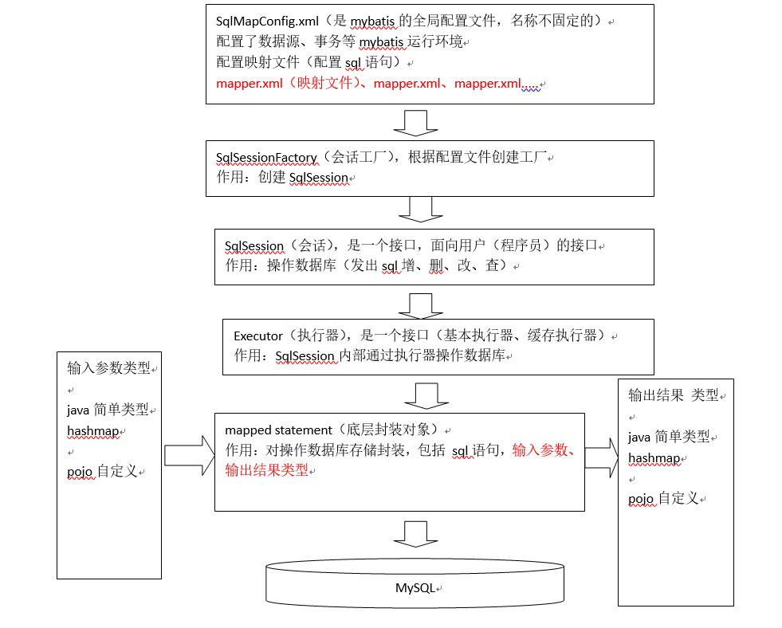
注解：
- SqlMapConfig.xml （Mybatis的全局配置文件，名称不定）配置了数据源、事务等 Mybatis 运行环境
- Mapper.xml 映射文件（配置 sql 语句）
- SqlSessionFactory （会话工厂）根据配置文件配置工厂、创建 SqlSession
- SqlSession （会话）面向用户的接口、操作数据库（发出 sql 增删改查）
- Executor （执行器）是一个接口（基本执行器、缓存执行器）、SqlSession 内部通过执行器操作数据库
- Mapped Statement （底层封装对象）对操作数据库存储封装，包括 sql 语句、输入参数、输出结果类型
实现以下功能：
- 根据用户id查询一个用户信息
- 根据用户名称模糊查询用户信息列表
- 添加用户
- 更新用户
- 删除用户
java 环境 ：jdk1.8.0_77
开发工具 ： IDEA 2016.1
数据库 ： MySQL 5.7
Mybatis 运行环境（ jar 包）
MySQL 驱动包
其他依赖包
在classpath下创建log4j.properties如下：
xxxxxxxxxx71# Global logging configuration2#在开发环境日志级别要设置为DEBUG、生产环境要设置为INFO或者ERROR3log4j.rootLogger=DEBUG, stdout4# Console output...5log4j.appender.stdout=org.apache.log4j.ConsoleAppender6log4j.appender.stdout.layout=org.apache.log4j.PatternLayout7log4j.appender.stdout.layout.ConversionPattern=%5p [%t] - %m%nMybatis默认使用log4j作为输出日志信息。
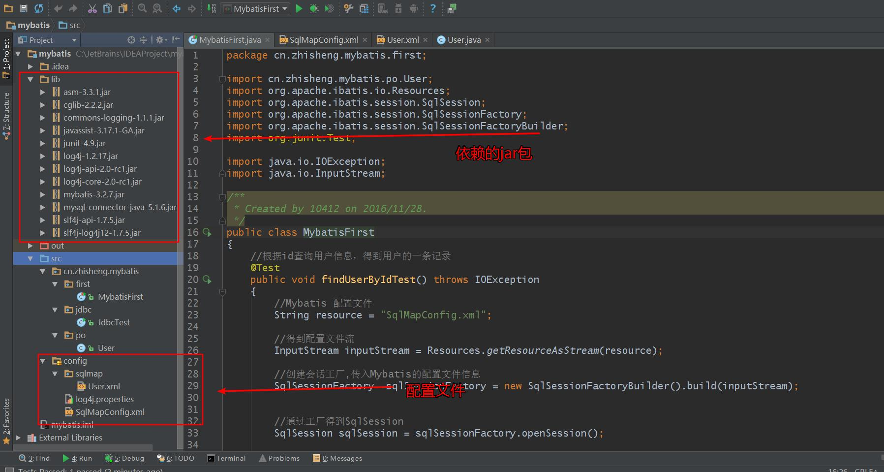
配置 Mybatis 的运行环境、数据源、事务等
xxxxxxxxxx201 2 4 5<configuration>6 <!-- 和spring整合后 environments配置将废除-->7 <environments default="development">8 <environment id="development">9 <!-- 使用jdbc事务管理,事务由 Mybatis 控制-->10 <transactionManager type="JDBC" />11 <!-- 数据库连接池,由Mybatis管理，数据库名是mybatis_test，Mysql用户名root，密码root -->12 <dataSource type="POOLED">13 <property name="driver" value="com.mysql.jdbc.Driver" />14 <property name="url" value="jdbc:mysql://localhost:3306/mybatis_test?characterEncoding=utf-8" />15 <property name="username" value="root" />16 <property name="password" value="root" />17 </dataSource>18 </environment>19 </environments>20</configuration>Po 类作为 mybatis 进行 sql 映射使用，po 类通常与数据库表对应，User.java 如下：
xxxxxxxxxx571package cn.zhisheng.mybatis.po;23import java.util.Date;45/**6 * Created by 10412 on 2016/11/28.7 */8public class User9{10 private int id;11 private String username; // 用户姓名12 private String sex; // 性别13 private Date birthday; // 生日14 private String address; // 地址1516 //getter and setter1718 public int getId() {19 return id;20 }2122 public void setId(int id) {23 this.id = id;24 }2526 public String getUsername() {27 return username;28 }2930 public void setUsername(String username) {31 this.username = username;32 }3334 public Date getBirthday() {35 return birthday;36 }3738 public void setBirthday(Date birthday) {39 this.birthday = birthday;40 }4142 public String getSex() {43 return sex;44 }4546 public void setSex(String sex) {47 this.sex = sex;48 }4950 public String getAddress() {51 return address;52 }5354 public void setAddress(String address) {55 this.address = address;56 }57}映射文件
- User.xml（原在 Ibatis 中命名）在 Mybatis 中命名规则为 xxxmapper.xml
- 在映射文件中配置 sql 语句
User.xml
xxxxxxxxxx61 2<mapper namespace="test">6</mapper>namespace ：命名空间，对 sql 进行分类化管理，用于隔离 sql 语句，后面会讲另一层非常重要的作用。
在 User.xml 中加入
xxxxxxxxxx121<!--通过select执行数据库查询2 id:标识映射文件中的sql3 将sql语句封装到mappedStatement对象中，所以id称为Statement的id4 #{}：表示占位符5 #{id}：其中的id表示接收输入的参数，参数名称就是id，如果输入参数是简单类型，那么#{}中的参数名可以任意，可以是value或者其他名称6 parameterType：表示指定输入参数的类型7 resultType：表示指定sql输出结果的所映射的java对象类型8 -->9<!-- 根据id获取用户信息 -->10 <select id="findUserById" parameterType="int" resultType="cn.zhisheng.mybatis.po.User">11 select * from user where id = #{id}12 </select>User.xml 映射文件已经完全写好了，那接下来就需要在 SqlMapConfig.xml中加载映射文件 User.xml
xxxxxxxxxx41<!--加载映射文件-->2 <mappers>3 <mapper resource="sqlmap/User.xml"/>4 </mappers>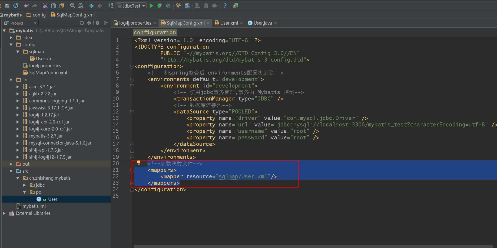
编写程序
MybatisFirst.java
xxxxxxxxxx451 package cn.zhisheng.mybatis.first;23 import cn.zhisheng.mybatis.po.User;4 import org.apache.ibatis.io.Resources;5 import org.apache.ibatis.session.SqlSession;6 import org.apache.ibatis.session.SqlSessionFactory;7 import org.apache.ibatis.session.SqlSessionFactoryBuilder;8 import org.junit.Test;910 import java.io.IOException;11 import java.io.InputStream;1213 /**14 * Created by 10412 on 2016/11/28.15 */16 public class MybatisFirst17 {18 //根据id查询用户信息，得到用户的一条记录19 20 public void findUserByIdTest() throws IOException21 {22 //Mybatis 配置文件23 String resource = "SqlMapConfig.xml";2425 //得到配置文件流26 InputStream inputStream = Resources.getResourceAsStream(resource);2728 //创建会话工厂,传入Mybatis的配置文件信息29 SqlSessionFactory sqlSessionFactory = new SqlSessionFactoryBuilder().build(inputStream);3031 //通过工厂得到SqlSession32 SqlSession sqlSession = sqlSessionFactory.openSession();3334 //通过SqlSession操作数据库35 //第一个参数：映射文件中Statement的id，等于 = namespace + "." + Statement的id36 //第二个参数：指定和映射文件中所匹配的parameterType类型的参数37 //sqlSession.selectOne 结果与映射文件中所匹配的resultType类型的对象38 User user = sqlSession.selectOne("test.findUserById", 1);3940 System.out.println(user);4142 //释放资源43 sqlSession.close();44 }45 }然后运行一下这个测试，发现结果如下就代表可以了：
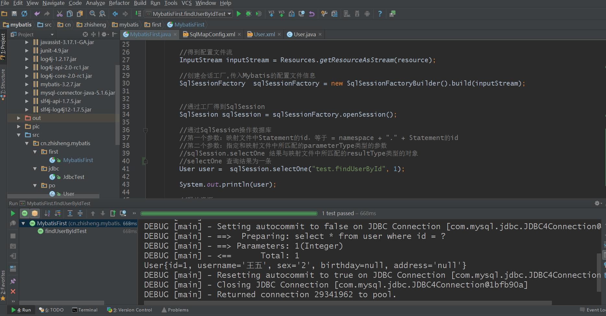
映射文件
依旧使用 User.xml 文件，只不过要在原来的文件中加入
xxxxxxxxxx91<!-- 自定义条件查询用户列表2 resultType：指定就是单条记录所映射的java对象类型3 ${}:表示拼接sql串，将接收到的参数内容不加修饰的拼接在sql中4 使用${}拼接sql，会引起sql注入5 ${value}：接收输入参数的内容，如果传入类型是简单类型，${}中只能够使用value6-->7 <select id="findUserByUsername" parameterType="java.lang.String" resultType="cn.zhisheng.mybatis.po.User">8 select * from user where username like '%${value}%'9 </select>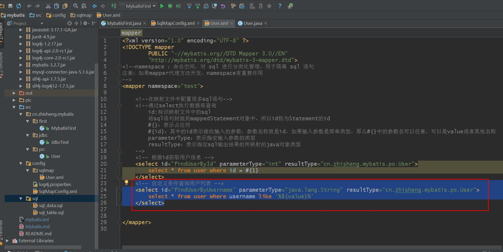
编写程序
依旧直接在刚才那个 MybatisFirst.java 中加入测试代码：
xxxxxxxxxx281//根据用户名称模糊查询用户信息列表2 3 public void findUserByUsernameTest() throws IOException4 {5 //Mybatis 配置文件6 String resource = "SqlMapConfig.xml";78 //得到配置文件流9 InputStream inputStream = Resources.getResourceAsStream(resource);1011 //创建会话工厂,传入Mybatis的配置文件信息12 SqlSessionFactory sqlSessionFactory = new SqlSessionFactoryBuilder().build(inputStream);13 //通过工厂得到SqlSession14 SqlSession sqlSession = sqlSessionFactory.openSession();1516 //通过SqlSession操作数据库17 //第一个参数：映射文件中Statement的id，等于 = namespace + "." + Statement的id18 //第二个参数：指定和映射文件中所匹配的parameterType类型的参数1920 //selectList 查询结果可能多条21 //list中的user和映射文件中resultType所指定的类型一致22 List<User> list = sqlSession.selectList("test.findUserByUsername", "小明");2324 System.out.println(list);2526 //释放资源27 sqlSession.close();28 }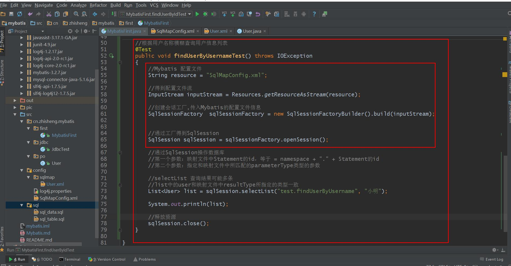
同样测试一下findUserByUsernameTest ，如果运行结果如下就代表没问题：
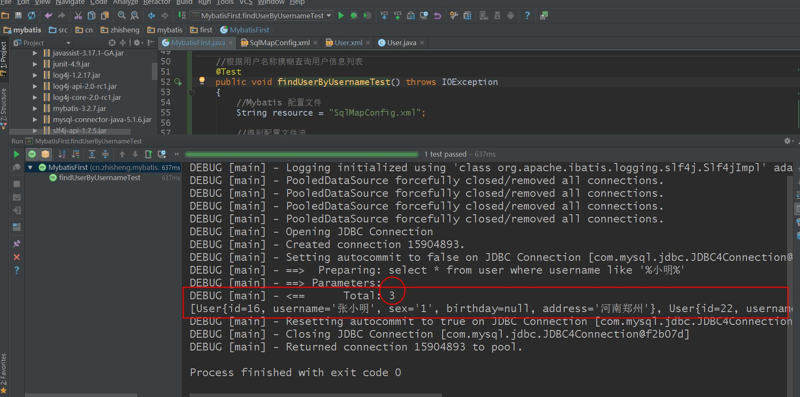
通过这个代码可以发现，其中有一部分代码是冗余的，我们可以将其封装成一个函数。
xxxxxxxxxx71public void createSqlSessionFactory() throws IOException {2 // 配置文件3 String resource = "SqlMapConfig.xml";4 InputStream inputStream = Resources.getResourceAsStream(resource);5 // 使用SqlSessionFactoryBuilder从xml配置文件中创建SqlSessionFactory6 sqlSessionFactory = new SqlSessionFactoryBuilder().build(inputStream);7 }
#{ }表示一个占位符号，通过#{ }可以实现preparedStatement向占位符中设置值，自动进行java 类型和 jdbc 类型转换，#{ }可以有效防止sql注入。#{ }可以接收简单类型值或 pojo 属性值（通过 OGNL 读取对象中的值，属性.属性.属性..方式获取对象属性值）。 如果parameterType传输单个简单类型值，#{ }括号中可以是 value 或其它名称。${ }表示拼接 sql 串，通过${ }可以将 parameterType 传入的内容拼接在 sql 中且不进行 jdbc 类型转换，${ }可以接收简单类型值或 pojo 属性值（（通过 OGNL 读取对象中的值，属性.属性.属性..方式获取对象属性值）），如果 parameterType 传输单个简单类型值，${}括号中只能是 value。
- parameterType：指定输入参数类型，mybatis 通过 ognl 从输入对象中获取参数值拼接在 sql 中。
- resultType：指定输出结果类型，mybatis 将 sql 查询结果的一行记录数据映射为 resultType 指定类型的对象。
selectOne 查询一条记录来进行映射，如果使用selectOne查询多条记录则抛出异常：
org.apache.ibatis.exceptions.TooManyResultsException: Expected one result (or null) to bereturned by selectOne(), but found: 3 at
selectList 可以查询一条或多条记录来进行映射。
映射文件
在 User.xml 中加入：
xxxxxxxxxx81<!-- 添加用户 -->2 <insert id="insetrUser" parameterType="cn.zhisheng.mybatis.po.User" >3 <selectKey keyProperty="id" order="AFTER" resultType="java.lang.Integer">4 select LAST_INSERT_ID()5 </selectKey>6 insert into user(username, birthday, sex, address)7 values(#{username}, #{birthday}, #{sex}, #{address})8 </insert>注意:
- selectKey将主键返回，需要再返回
- 添加selectKey实现将主键返回
- keyProperty:返回的主键存储在pojo中的哪个属性
- order：selectKey的执行顺序，是相对与insert语句来说，由于mysql的自增原理执行完insert语句之后才将主键生成，所以这里selectKey的执行顺序为after
- resultType:返回的主键是什么类型
- LAST_INSERT_ID():是mysql的函数，返回auto_increment自增列新记录id值。
然后在 MybatisFirst.java 中写一个测试函数，代码如下
xxxxxxxxxx211 public void insetrUser() throws IOException, ParseException {3 //Mybatis 配置文件4 String resource = "SqlMapConfig.xml";5 //得到配置文件流6 InputStream inputStream = Resources.getResourceAsStream(resource);7 //创建会话工厂,传入Mybatis的配置文件信息8 SqlSessionFactory sqlSessionFactory = new SqlSessionFactoryBuilder().build(inputStream);9 //通过工厂得到SqlSession10 SqlSession sqlSession = sqlSessionFactory.openSession();11 User user = new User();12 SimpleDateFormat sdf = new SimpleDateFormat ("yyyy-MM-dd");13 user.setUsername("田志声");14 user.setSex("男");15 user.setBirthday(sdf.parse("2016-11-29"));16 user.setAddress("江西南昌");17 sqlSession.insert("test.insetrUser", user);18 sqlSession.commit();19 //释放资源20 sqlSession.close();21 }然后 run 一下，如果出现的结果如下，那么就是成功了。
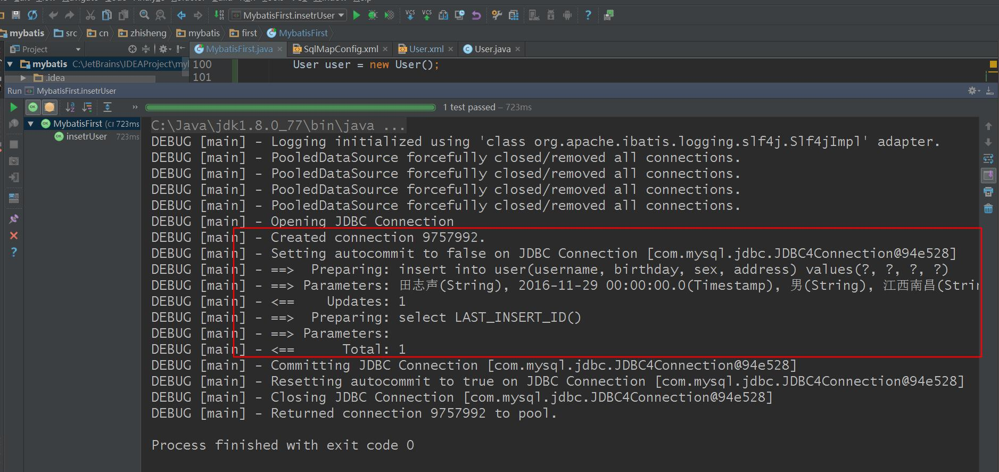
同时数据库也能查询到刚插入的用户信息：
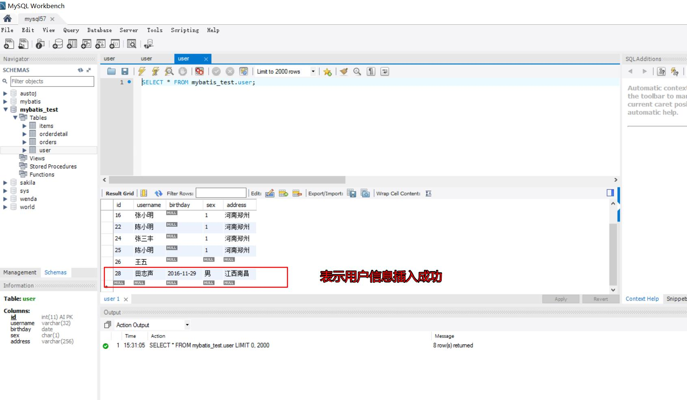
MySQL 自增主键：执行 insert 提交之前自动生成一个自增主键，通过 MySQL 函数获取到刚插入记录的自增主键： LAST_INSERT_ID() ，是在 insert 函数之后调用。
非自增主键返回：使用 MySQL 的 uuid() 函数生成主键，需要修改表中 id 字段类型为 String ，长度设置为 35 位，执行思路：先通过 uuid() 查询到主键，将主键输入到 sql 语句中；执行 uuid() 语句顺序相对于 insert 语句之前执行。
刚才那个插入用户的地方，其实也可以通过 uuid() 来生成主键，如果是这样的话，那么我们就需要在 User.xml 中加入如下代码：
xxxxxxxxxx91<!--使用 MySQL 的 uuid()生成主键2 执行过程：3 首先通过uuid()得到主键，将主键设置到user对象的id属性中4 其次执行insert时，从user对象中取出id属性值5 -->6<selectKey keyProperty="id" order="BEFORE" resultType="java.lang.String">7 select uuid()8</selectKey>9insert into user(id, username, birthday, sex, address) values(#{id}, #{username}, #{birthday}, #{sex}, #{address})Oracle 使用序列生成主键
首先自定义一个序列且用于生成主键，selectKey使用如下：
xxxxxxxxxx81<insert id="insertUser" parameterType="cn.itcast.mybatis.po.User">2 <selectKey resultType="java.lang.Integer" order="BEFORE"3 keyProperty="id">4 SELECT 自定义序列.NEXTVAL FROM DUAL5 </selectKey>6insert into user(id,username,birthday,sex,address)7 values(#{id},#{username},#{birthday},#{sex},#{address})8</insert>
前面说了这么多了，这里就简单来说明下：
在 User.xml 文件中加入如下代码：
xxxxxxxxxx41<!--删除用户-->2 <delete id="deleteUserById" parameterType="int">3 delete from user where user.id = #{id}4 </delete>在 MybatisFirst.java 文件中加入如下代码：
xxxxxxxxxx291//删除用户2 3 public void deleteUserByIdTest() throws IOException4 {5 //Mybatis 配置文件6 String resource = "SqlMapConfig.xml";78 //得到配置文件流9 InputStream inputStream = Resources.getResourceAsStream(resource);1011 //创建会话工厂,传入Mybatis的配置文件信息12 SqlSessionFactory sqlSessionFactory = new SqlSessionFactoryBuilder().build(inputStream);131415 //通过工厂得到SqlSession16 SqlSession sqlSession = sqlSessionFactory.openSession();1718 //通过SqlSession操作数据库19 //第一个参数：映射文件中Statement的id，等于 = namespace + "." + Statement的id20 //第二个参数：指定和映射文件中所匹配的parameterType类型的参数2122 sqlSession.delete("test.deleteUserById", 26);2324 //提交事务25 sqlSession.commit();2627 //释放资源28 sqlSession.close();29 }测试结果如下：
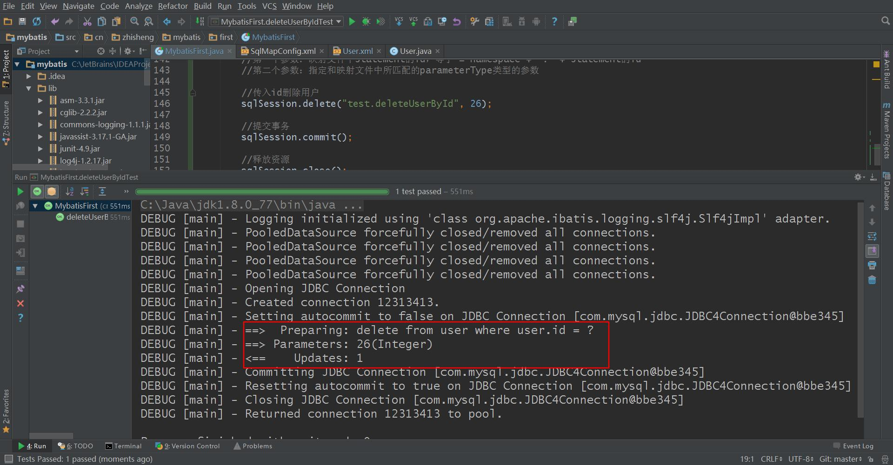
之前的数据库 user 表查询结果：
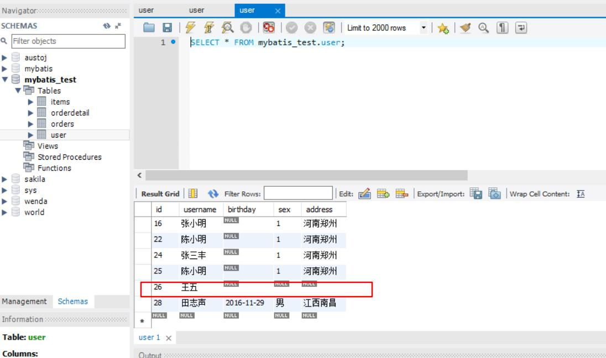
执行完测试代码后，结果如下：
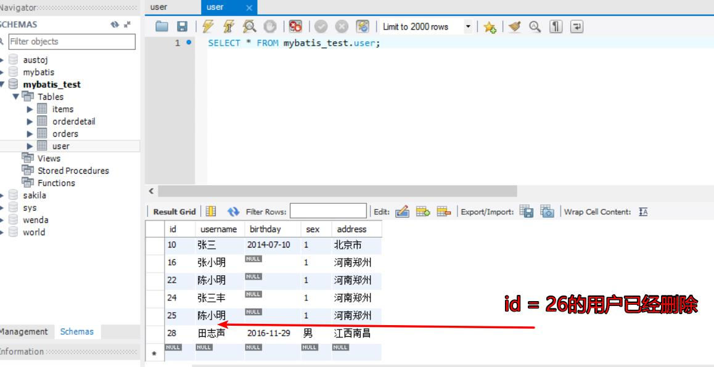
在 User.xml 中加入如下代码：
xxxxxxxxxx91<!--根据id更新用户2 需要输入用户的id3 传入用户要更新的信息4 parameterType指定user对象，包括id和更新信息，id必须存在5 #{id}：从输入对象中获取id属性值6-->7<update id="updateUserById" parameterType="cn.zhisheng.mybatis.po.User">8 update user set username = #{username}, birthday = #{birthday}, sex = #{sex}, address = #{address} where user.id = #{id}9 </update>然后在 MybatisFirst.java 中加入
xxxxxxxxxx371//根据id更新用户信息2 3 public void updateUserByIdTest() throws IOException, ParseException {4 //Mybatis 配置文件5 String resource = "SqlMapConfig.xml";67 //得到配置文件流8 InputStream inputStream = Resources.getResourceAsStream(resource);910 //创建会话工厂,传入Mybatis的配置文件信息11 SqlSessionFactory sqlSessionFactory = new SqlSessionFactoryBuilder().build(inputStream);1213 //通过工厂得到SqlSession14 SqlSession sqlSession = sqlSessionFactory.openSession();1516 //为了设置生日的日期输入17 SimpleDateFormat sdf = new SimpleDateFormat ("yyyy-MM-dd");1819 User user = new User();20 //根据id更新用户信息21 user.setId(24);22 user.setUsername("张四风");23 user.setBirthday(sdf.parse("2015-01-12"));24 user.setSex("女");25 user.setAddress("上海黄埔");2627 //通过SqlSession操作数据库28 //第一个参数：映射文件中Statement的id，等于 = namespace + "." + Statement的id29 //第二个参数：指定和映射文件中所匹配的parameterType类型的参数30 sqlSession.update("test.updateUserById", user);3132 //提交事务33 sqlSession.commit();3435 //释放资源36 sqlSession.close();37 }测试结果如下：
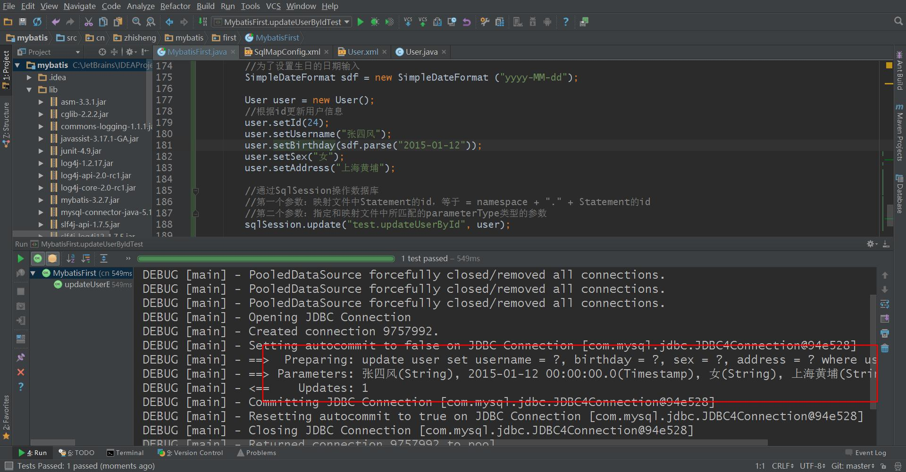
查看数据库，id 为 24 的用户信息是否更新了：
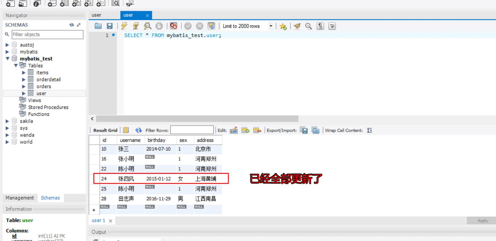
啊，是不是很爽，所有的需求都完成了。
没错，这只是 Mybatis 的一个简单的入门程序，简单的实现了对数据库的增删改查功能，通过这个我们大概可以了解这个编程方式了。
1、 数据库链接创建、释放频繁造成系统资源浪费从而影响系统性能，如果使用数据库链接池可解决此问题。
解决：在SqlMapConfig.xml中配置数据链接池，使用连接池管理数据库链接。
2、 Sql语句写在代码中造成代码不易维护，实际应用sql变化的可能较大，sql变动需要改变java代码。
解决：将Sql语句配置在XXXXmapper.xml文件中与java代码分离。
3、 向sql语句传参数麻烦，因为sql语句的where条件不一定，可能多也可能少，占位符需要和参数一一对应。
解决：Mybatis自动将java对象映射至sql语句，通过statement中的parameterType定义输入参数的类型。
4、 对结果集解析麻烦，sql变化导致解析代码变化，且解析前需要遍历，如果能将数据库记录封装成pojo对象解析比较方便。
解决：Mybatis自动将sql执行结果映射至java对象，通过statement中的resultType定义输出结果的类型。
Mybatis和hibernate不同，它不完全是一个ORM框架，因为MyBatis需要程序员自己编写Sql语句，不过mybatis可以通过XML或注解方式灵活配置要运行的sql语句，并将java对象和sql语句映射生成最终执行的sql，最后将sql执行的结果再映射生成java对象。
Mybatis学习门槛低，简单易学，程序员直接编写原生态sql，可严格控制sql执行性能，灵活度高，非常适合对关系数据模型要求不高的软件开发，例如互联网软件、企业运营类软件等，因为这类软件需求变化频繁，一但需求变化要求成果输出迅速。但是灵活的前提是mybatis无法做到数据库无关性，如果需要实现支持多种数据库的软件则需要自定义多套sql映射文件，工作量大。
Hibernate对象/关系映射能力强，数据库无关性好，对于关系模型要求高的软件（例如需求固定的定制化软件）如果用hibernate开发可以节省很多代码，提高效率。但是Hibernate的学习门槛高，要精通门槛更高，而且怎么设计O/R映射，在性能和对象模型之间如何权衡，以及怎样用好Hibernate需要具有很强的经验和能力才行。
总之，按照用户的需求在有限的资源环境下只要能做出维护性、扩展性良好的软件架构都是好架构，所以框架只有适合才是最好。
将下边的功能实现Dao：
Mybatis 配置文件 SqlMapConfig.xml
SqlSession 中封装了对数据库的操作，如：查询、插入、更新、删除等。
通过 SqlSessionFactory 创建 SqlSession，而 SqlSessionFactory 是通过 SqlSessionFactoryBuilder 进行创建。
SqlSessionFactoryBuilder 用于创建 SqlSessionFacoty，SqlSessionFacoty 一旦创建完成就不需要SqlSessionFactoryBuilder 了，因为 SqlSession 是通过 SqlSessionFactory 生产，所以可以将SqlSessionFactoryBuilder 当成一个工具类使用，最佳使用范围是方法范围即方法体内局部变量。
SqlSessionFactory 是一个接口，接口中定义了 openSession 的不同重载方法，SqlSessionFactory 的最佳使用范围是整个应用运行期间，一旦创建后可以重复使用，通常以单例模式管理 SqlSessionFactory。
SqlSession 是一个面向用户的接口， sqlSession 中定义了数据库操作，默认使用 DefaultSqlSession 实现类。
执行过程如下：
1）、 加载数据源等配置信息
Environment environment = configuration.getEnvironment();
2）、 创建数据库链接
3）、 创建事务对象
4）、 创建Executor，SqlSession 所有操作都是通过 Executor 完成，mybatis 源码如下：
xxxxxxxxxx101if (ExecutorType.BATCH == executorType) {2 executor = newBatchExecutor(this, transaction);3 } elseif (ExecutorType.REUSE == executorType) {4 executor = new ReuseExecutor(this, transaction);5 } else {6 executor = new SimpleExecutor(this, transaction);7 }8if (cacheEnabled) {9 executor = new CachingExecutor(executor, autoCommit);10 }5）、 SqlSession的实现类即 DefaultSqlSession，此对象中对操作数据库实质上用的是 Executor
每个线程都应该有它自己的SqlSession实例。SqlSession的实例不能共享使用，它也是线程不安全的。因此最佳的范围是请求或方法范围(定义局部变量使用)。绝对不能将SqlSession实例的引用放在一个类的静态字段或实例字段中。
打开一个SqlSession；使用完毕就要关闭它。通常把这个关闭操作放到 finally 块中以确保每次都能执行关闭。如下：
xxxxxxxxxx61SqlSession session = sqlSessionFactory.openSession();2 try {3 // do work4 } finally {5 session.close();6}需要程序员编写 Dao 接口和 Dao 实现类；
需要在 Dao 实现类中注入 SqlsessionFactory ，在方法体内通过 SqlsessionFactory 创建 Sqlsession。
xxxxxxxxxx111public interface UserDao //dao接口，用户管理2{3 //根据id查询用户信息4 public User findUserById(int id) throws Exception;56 //添加用户信息7 public void addUser(User user) throws Exception;89 //删除用户信息10 public void deleteUser(int id) throws Exception;11} xxxxxxxxxx411public class UserDaoImpl implements UserDao //dao接口实现类2{3 //需要在 Dao 实现类中注入 SqlsessionFactory4 //这里通过构造方法注入5 private SqlSessionFactory sqlSessionFactory;6 public UserDaoImpl(SqlSessionFactory sqlSessionFactory)7 {8 this.sqlSessionFactory = sqlSessionFactory;9 }10 11 public User findUserById(int id) throws Exception12 {13 //在方法体内通过 SqlsessionFactory 创建 Sqlsession14 SqlSession sqlSession = sqlSessionFactory.openSession();15 User user = sqlSession.selectOne("test.findUserById", id);16 sqlSession.close();17 return user;18 }19 20 public void insertUser(User user) throws Exception21 {22 //在方法体内通过 SqlsessionFactory 创建 Sqlsession23 SqlSession sqlSession = sqlSessionFactory.openSession();24 //执行插入的操作25 sqlSession.insert("test.insetrUser", user);26 //提交事务27 sqlSession.commit();28 //释放资源29 sqlSession.close();30 }31 32 public void deleteUser(int id) throws Exception33 {34 //在方法体内通过 SqlsessionFactory 创建 Sqlsession35 SqlSession sqlSession = sqlSessionFactory.openSession();36 sqlSession.delete("test.deleteUserById", id);37 //提交事务38 sqlSession.commit();39 sqlSession.close();40 }41} xxxxxxxxxx251public class UserDaoImplTest2{3 private SqlSessionFactory sqlSessionFactory;4 //此方法是在 testFindUserById 方法之前执行的5 6 public void setup() throws Exception7 {8 //创建sqlSessionFactory9 //Mybatis 配置文件10 String resource = "SqlMapConfig.xml";11 //得到配置文件流12 InputStream inputStream = Resources.getResourceAsStream(resource);13 //创建会话工厂,传入Mybatis的配置文件信息14 sqlSessionFactory = new SqlSessionFactoryBuilder().build(inputStream);15 }16 17 public void testFindUserById() throws Exception18 {19 //创建UserDao的对象20 UserDao userDao = new UserDaoImpl(sqlSessionFactory);21 //调用UserDao方法22 User user = userDao.findUserById(1);23 System.out.println(user);24 }25}通过id查询用户信息测试结果如下：（其他的可以自己在写测试代码，原理类似）
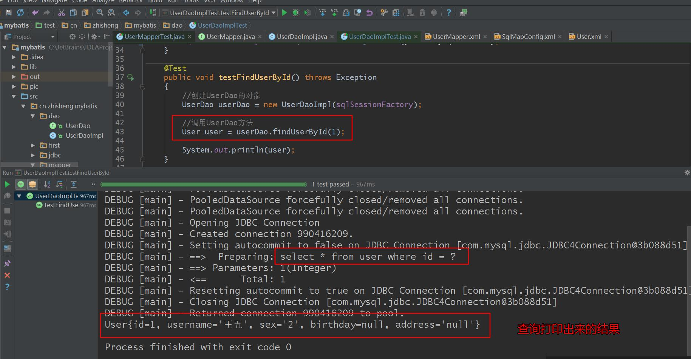
原始Dao开发中存在以下问题：
程序员需要编写 mapper.xml 映射文件
只需要程序员编写Mapper接口（相当于Dao接口），需遵循一些开发规范，mybatis 可以自动生成 mapper 接口类代理对象。
开发规范：
在 mapper.xml 中 namespace 等于 mapper 接口地址
xxxxxxxxxx11<mapper namespace="cn.zhisheng.mybatis.mapper.UserMapper"></mapper>在 xxxmapper.java 接口中的方法名要与 xxxMapper.xml 中 statement 的 id 一致。
在 xxxmapper.java 接口中的输入参数类型要与 xxxMapper.xml 中 statement 的 parameterType 指定的参数类型一致。
在 xxxmapper.java 接口中的返回值类型要与 xxxMapper.xml 中 statement 的 resultType 指定的类型一致。
UserMapper.java
xxxxxxxxxx21//根据id查询用户信息2 public User findUserById(int id) throws Exception;UserMapper.xml
xxxxxxxxxx31<select id="findUserById" parameterType="int" resultType="cn.zhisheng.mybatis.po.User">2 select * from user where id = #{1}3</select>以上的开发规范主要是对下边的代码进行统一的生成：
xxxxxxxxxx41User user = sqlSession.selectOne("test.findUserById", id);2sqlSession.insert("test.insetrUser", user);3sqlSession.delete("test.deleteUserById", id);4List<User> list = sqlSession.selectList("test.findUserByName", username);测试之前记得在 SqlMapConfig.xml 文件中添加加载映射文件 UserMapper.xml：
xxxxxxxxxx11<mapper resource="mapper/UserMapper.xml"/>测试代码：
xxxxxxxxxx261public class UserMapperTest2{3 private SqlSessionFactory sqlSessionFactory;4 //此方法是在 testFindUserById 方法之前执行的5 6 public void setup() throws Exception7 {8 //创建sqlSessionFactory9 //Mybatis 配置文件10 String resource = "SqlMapConfig.xml";11 //得到配置文件流12 InputStream inputStream = Resources.getResourceAsStream(resource);13 //创建会话工厂,传入Mybatis的配置文件信息14 sqlSessionFactory = new SqlSessionFactoryBuilder().build(inputStream);15 }16 17 public void testFindUserById() throws Exception18 {19 SqlSession sqlSession = sqlSessionFactory.openSession();20 //创建usermapper对象,mybatis自动生成代理对象21 UserMapper userMapper = sqlSession.getMapper(UserMapper.class);22 //调用UserMapper的方法23 User user = userMapper.findUserById(1);24 System.out.println(user);25 }26}通过id查询用户信息测试结果如下：（其他的请自己根据上下文写测试代码，或者去看我 Github-Mybatis学习笔记 上看我这个项目的全部代码）
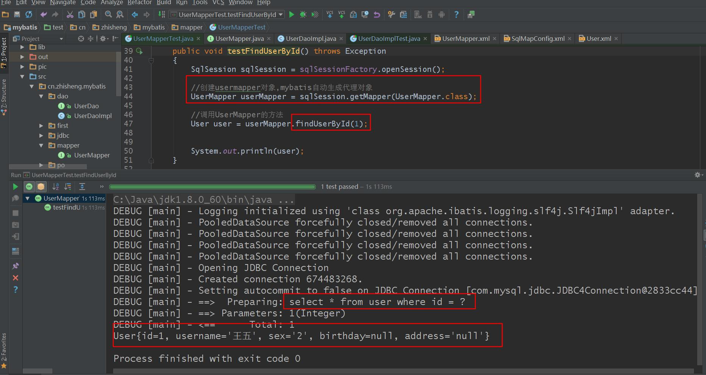
通过姓名查询用户信息：
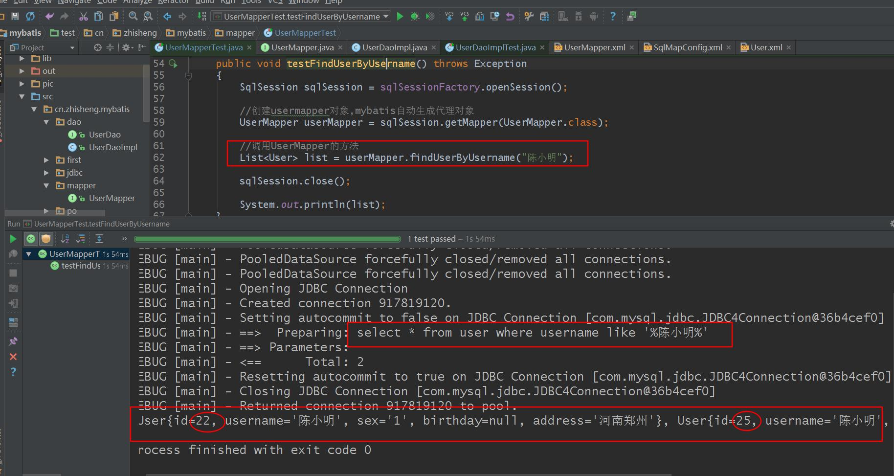
mapper 接口方法参数只能有一个，系统是否不利于维护？
系统框架中，dao层的代码是被业务层公用的。
即使 mapper 接口只有一个参数，可以使用包装类型的 pojo 满足不同的业务方法的需求。
注意：持久层方法的参数可以包装类型、map.... ，service方法中不建议使用包装类型。（不利于业务层的可扩展性）
Mybatis 的全局配置变量，配置内容和顺序如下：
properties（属性）
settings（全局配置参数）
typeAliases（类型别名）
typeHandlers（类型处理器）
objectFactory（对象工厂）
plugins（插件）
environments（环境集合属性对象）
environment（环境子属性对象）
transactionManager（事务管理）
dataSource（数据源）
mappers（映射器）
需求：将数据库连接参数单独配置在 db.properties 中，只需要在 SqlMapConfig.xml 中加载该配置文件 db.properties 的属性值。在 SqlMapConfig.xml 中就不需要直接对数据库的连接参数进行硬编码了。方便以后对参数进行统一的管理，其他的xml文件可以引用该 db.properties 。
db.properties
xxxxxxxxxx41jdbc.driver=com.mysql.jdbc.Driver2jdbc.url=jdbc:mysql://localhost:3306/mybatis_test?characterEncoding=utf-83jdbc.username=root4jdbc.password=root那么 SqlMapConfig.xml 中的配置变成如下：
xxxxxxxxxx161<!--加载配置文件-->2 <properties resource="db.properties"></properties>3 <!-- 和spring整合后 environments配置将废除-->4 <environments default="development">5 <environment id="development">6 <!-- 使用jdbc事务管理,事务由 Mybatis 控制-->7 <transactionManager type="JDBC" />8 <!-- 数据库连接池-->9 <dataSource type="POOLED">10 <property name="driver" value="${jdbc.driver}" />11 <property name="url" value="${jdbc.url}" />12 <property name="username" value="${jdbc.username}" />13 <property name="password" value="${jdbc.password}" />14 </dataSource>15 </environment>16 </environments>配置完成后我们测试一下是否能够和刚才一样的能够成功呢？那么我就先在db.properties中把数据库密码故意改错，看是否是正确的？不出意外的话是会报错的。
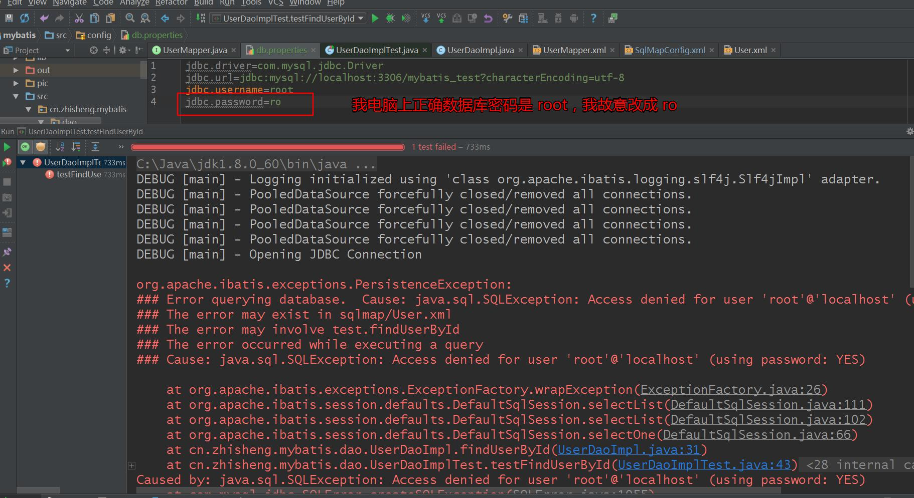
注意： MyBatis 将按照下面的顺序来加载属性：
因此，通过parameterType传递的属性具有最高优先级，resource或 url 加载的属性次之，最低优先级的是 properties 元素体内定义的属性。
建议：
Mybatis 框架在运行时可以调整一些运行参数
比如：开启二级缓存、开启延迟加载。。。
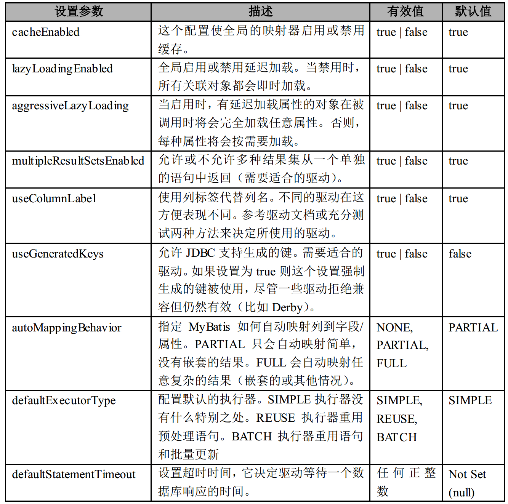
需求：
在mapper.xml中，定义很多的statement，statement需要parameterType指定输入参数的类型、需要resultType指定输出结果的映射类型。
如果在指定类型时输入类型全路径，不方便进行开发，可以针对parameterType或resultType指定的类型定义一些别名，在mapper.xml中通过别名定义，方便开发。
Mybatis支持的别名：
| 别名 | 映射的类型 |
|---|---|
| _byte | byte |
| _long | long |
| _short | short |
| _int | int |
| _integer | int |
| _double | double |
| _float | float |
| _boolean | boolean |
| string | String |
| byte | Byte |
| long | Long |
| short | Short |
| int | Integer |
| integer | Integer |
| double | Double |
| float | Float |
| boolean | Boolean |
| date | Date |
| decimal | BigDecimal |
| bigdecimal | BigDecimal |
自定义别名：
在 SqlMapConfig.xml 中配置：(设置别名)
xxxxxxxxxx71<typeAliases>2 <!-- 单个别名定义 -->3 <typeAlias alias="user" type="cn.zhisheng.mybatis.po.User"/>4 <!-- 批量别名定义，扫描整个包下的类，别名为类名（首字母大写或小写都可以） -->5 <package name="cn.zhisheng.mybatis.po"/>6 <package name="其它包"/>7</typeAliases>在 UserMapper.xml 中引用别名：( resultType 为 user )
xxxxxxxxxx31<select id="findUserById" parameterType="int" resultType="user">2 select * from user where id = #{id}3</select>测试结果：
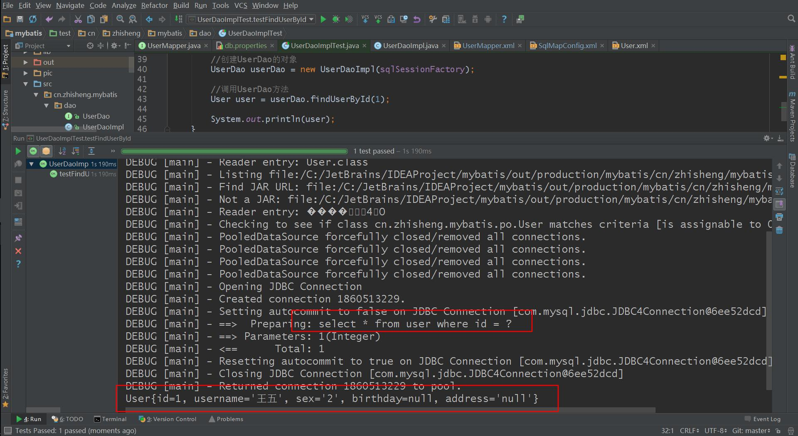
mybatis中通过typeHandlers完成jdbc类型和java类型的转换。
通常情况下，mybatis提供的类型处理器满足日常需要，不需要自定义.
mybatis支持类型处理器：
| 类型处理器 | Java类型 | JDBC类型 |
|---|---|---|
| BooleanTypeHandler | Boolean，boolean | 任何兼容的布尔值 |
| ByteTypeHandler | Byte，byte | 任何兼容的数字或字节类型 |
| ShortTypeHandler | Short，short | 任何兼容的数字或短整型 |
| IntegerTypeHandler | Integer，int | 任何兼容的数字和整型 |
| LongTypeHandler | Long，long | 任何兼容的数字或长整型 |
| FloatTypeHandler | Float，float | 任何兼容的数字或单精度浮点型 |
| DoubleTypeHandler | Double，double | 任何兼容的数字或双精度浮点型 |
| BigDecimalTypeHandler | BigDecimal | 任何兼容的数字或十进制小数类型 |
| StringTypeHandler | String | CHAR和VARCHAR类型 |
| ClobTypeHandler | String | CLOB和LONGVARCHAR类型 |
| NStringTypeHandler | String | NVARCHAR和NCHAR类型 |
| NClobTypeHandler | String | NCLOB类型 |
| ByteArrayTypeHandler | byte[] | 任何兼容的字节流类型 |
| BlobTypeHandler | byte[] | BLOB和LONGVARBINARY类型 |
| DateTypeHandler | Date（java.util） | TIMESTAMP类型 |
| DateOnlyTypeHandler | Date（java.util） | DATE类型 |
| TimeOnlyTypeHandler | Date（java.util） | TIME类型 |
| SqlTimestampTypeHandler | Timestamp（java.sql） | TIMESTAMP类型 |
| SqlDateTypeHandler | Date（java.sql） | DATE类型 |
| SqlTimeTypeHandler | Time（java.sql） | TIME类型 |
| ObjectTypeHandler | 任意 | 其他或未指定类型 |
| EnumTypeHandler | Enumeration类型 | VARCHAR-任何兼容的字符串类型，作为代码存储（而不是索引）。 |
使用相对于类路径的资源，如：
使用完全限定路径
如：
使用 mapper 接口类路径
如：
注意：此种方法要求 mapper 接口名称和 mapper 映射文件名称相同，且放在同一个目录中。
注册指定包下的所有mapper接口
如：
Mapper.xml映射文件中定义了操作数据库的sql，每个sql是一个statement，映射文件是mybatis的核心。
通过 parameterType 指定输入参数的类型，类型可以是简单类型、hashmap、pojo的包装类型。
传递 pojo 包装对象 （重点）
开发中通过pojo传递查询条件 ，查询条件是综合的查询条件，不仅包括用户查询条件还包括其它的查询条件（比如将用户购买商品信息也作为查询条件），这时可以使用包装对象传递输入参数。
定义包装对象
定义包装对象将查询条件(pojo)以类组合的方式包装起来。
UserQueryVo.java
xxxxxxxxxx151public class UserQueryVo //用户包装类型2{3 //在这里包装所需要的查询条件4 //用户查询条件5 private UserCustom userCustom;6 public UserCustom getUserCustom()7 {8 return userCustom;9 }10 public void setUserCustom(UserCustom userCustom)11 {12 this.userCustom = userCustom;13 }14 //还可以包装其他的查询条件，比如订单、商品15}UserCustomer.java
xxxxxxxxxx41public class UserCustom extends User //用户的扩展类2{3 //可以扩展用户的信息4}UserMapper.xml 文件
xxxxxxxxxx71<!--用户信息综合查询2 #{userCustom.sex} :取出pojo包装对象中的性别值3 #{userCustom.username} :取出pojo包装对象中的用户名称4 -->5 <select id="findUserList" parameterType="cn.zhisheng.mybatis.po.UserQueryVo" resultType="cn.zhisheng.mybatis.po.UserCustom">6 select * from user where user.sex = #{userCustom.sex} and user.username like '%${userCustom.username}%'7 </select>UserMapper.java
xxxxxxxxxx21//用户信息综合查询2public List<UserCustom> findUserList(UserQueryVo userQueryVo) throws Exception;测试代码
xxxxxxxxxx171//测试用户信息综合查询2 3 public void testFindUserList() throws Exception4 {5 SqlSession sqlSession = sqlSessionFactory.openSession();6 //创建usermapper对象,mybatis自动生成代理对象7 UserMapper userMapper = sqlSession.getMapper(UserMapper.class);8 //创建包装对象，设置查询条件9 UserQueryVo userQueryVo = new UserQueryVo();10 UserCustom userCustom = new UserCustom();11 userCustom.setSex("男");12 userCustom.setUsername("张小明");13 userQueryVo.setUserCustom(userCustom);14 //调用UserMapper的方法15 List<UserCustom> list = userMapper.findUserList(userQueryVo);16 System.out.println(list);17 }测试结果
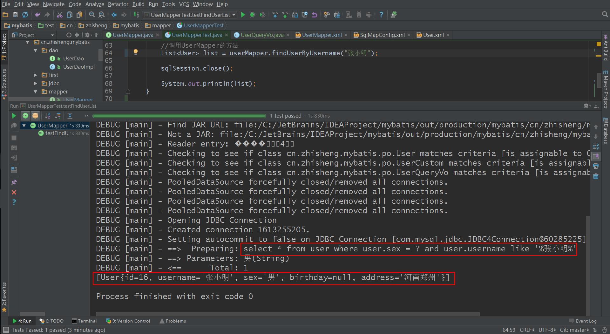
- 使用 resultType 进行输出映射，只有查询出来的列名和 pojo 中的属性名一致，该列才可以映射成功。
- 如果查询出来的列名和 pojo 中的属性名全部不一致，没有创建 pojo 对象。
- 只要查询出来的列名和 pojo 中的属性有一个一致，就会创建 pojo 对象。
需求：用户信息综合查询列表总数，通过查询总数和上边用户综合查询列表才可以实现分页
实现：
xxxxxxxxxx71<!--用户信息综合查询总数2 parameterType:指定输入的类型和findUserList一样3 resultType:输出结果类型为 int4 -->5 <select id="findUserCount" parameterType="cn.zhisheng.mybatis.po.UserQueryVo" resultType="int">6 select count(*) from user where user.sex = #{userCustom.sex} and user.username like '%${userCustom.username}%'7 </select> xxxxxxxxxx21 //用户信息综合查询总数2 public int findUserCount(UserQueryVo userQueryVo) throws Exception; xxxxxxxxxx161//测试用户信息综合查询总数2 3 public void testFindUserCount() throws Exception4 {5 SqlSession sqlSession = sqlSessionFactory.openSession();6 //创建usermapper对象,mybatis自动生成代理对象7 UserMapper userMapper = sqlSession.getMapper(UserMapper.class);8 //创建包装对象，设置查询条件9 UserQueryVo userQueryVo = new UserQueryVo();10 UserCustom userCustom = new UserCustom();11 userCustom.setSex("男");12 userCustom.setUsername("张小明");13 userQueryVo.setUserCustom(userCustom);14 //调用UserMapper的方法15 System.out.println(userMapper.findUserCount(userQueryVo));16 }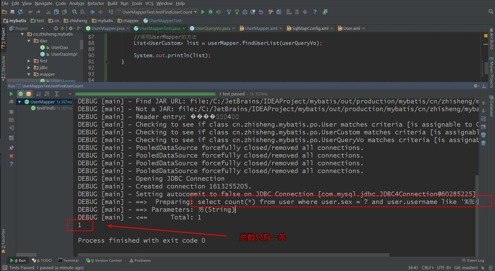
注意：查询出来的结果集只有一行且一列，可以使用简单类型进行输出映射。
输出pojo对象和pojo列表
不管是输出的pojo单个对象还是一个列表（list中包括pojo），在mapper.xml中resultType指定的类型是一样的。
在mapper.java指定的方法返回值类型不一样：
1、输出单个pojo对象，方法返回值是单个对象类型
xxxxxxxxxx21//根据id查询用户信息2 public User findUserById(int id) throws Exception;2、输出pojo对象list，方法返回值是List
xxxxxxxxxx21 //根据用户名查询用户信息2 public List<User> findUserByUsername(String userName) throws Exception;resultType总结：
输出pojo对象和输出pojo列表在sql中定义的resultType是一样的。
返回单个pojo对象要保证sql查询出来的结果集为单条，内部使用session.selectOne方法调用，mapper接口使用pojo对象作为方法返回值。
返回pojo列表表示查询出来的结果集可能为多条，内部使用session.selectList方法，mapper接口使用List
resultType 可以指定 pojo 将查询结果映射为 pojo，但需要 pojo 的属性名和 sql 查询的列名一致方可映射成功。
如果sql查询字段名和pojo的属性名不一致，可以通过resultMap将字段名和属性名作一个对应关系 ，resultMap实质上还需要将查询结果映射到pojo对象中。
resultMap可以实现将查询结果映射为复杂类型的pojo，比如在查询结果映射对象中包括pojo和list实现一对一查询和一对多查询。
使用方法：
1、定义 resultMap
2、使用 resultMap 作为 statement 的输出映射类型
将下面的 sql 使用 User 完成映射
xxxxxxxxxx11select id id_, username username_ from user where id = #{value}User 类中属性名和上边查询的列名不一致。
所以需要：
1、定义 resultMap
xxxxxxxxxx201<!--定义 resultMap2 将select id id_, username username_ from user where id = #{value} 和User类中的属性做一个映射关系3 type: resultMap最终映射的java对象类型4 id:对resultMap的唯一标识5 -->6 <resultMap id="userResultMap" type="user">7 <!--id表示查询结果中的唯一标识8 column：查询出来的列名9 property：type指定pojo的属性名10 最终resultMap对column和property做一个映射关系（对应关系）11 -->12 <id column="id_" property="id"/>1314 <!--result: 对普通结果映射定义15 column：查询出来的列名16 property：type指定pojo的属性名17 最终resultMap对column和property做一个映射关系（对应关系）18 -->19 <result column="username_" property="username"/>20 </resultMap>2、使用 resultMap 作为 statement 的输出映射类型
xxxxxxxxxx51<!--使用 resultMap 作为输出映射类型2 resultMap="userResultMap":其中的userResultMap就是我们刚才定义的 resultMap 的id值,如果这个resultMap在其他的mapper文件中，前边须加上namespace -->3 <select id="findUserByIdResultMap" parameterType="int" resultMap="userResultMap">4 select id id_, username username_ from user where id = #{value}5 </select>3、UserMapper.java
//根据id查询用户信息，使用 resultMap 输出 public User findUserByIdResultMap(int id) throws Exception;
4、测试
xxxxxxxxxx111//测试根据id查询用户信息，使用 resultMap 输出2 3 public void testFindUserByIdResultMap() throws Exception4 {5 SqlSession sqlSession = sqlSessionFactory.openSession();6 //创建usermapper对象,mybatis自动生成代理对象7 UserMapper userMapper = sqlSession.getMapper(UserMapper.class);8 //调用UserMapper的方法9 User user = userMapper.findUserByIdResultMap(1);10 System.out.println(user);11 }5、测试结果
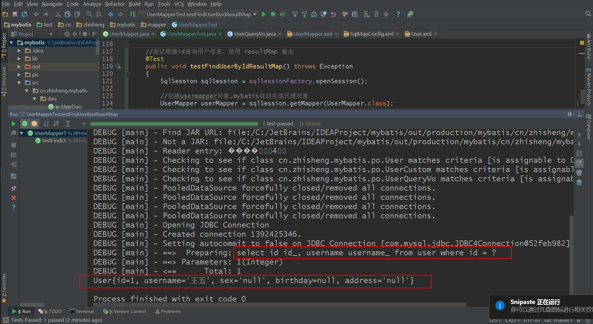
通过mybatis提供的各种标签方法实现动态拼接sql。
需求：
用户信息综合查询列表和用户信息查询列表总数这两个 statement的定义使用动态sql。
对查询条件进行判断，如果输入的参数不为空才进行查询条件拼接。
UserMapper.xml (findUserList的配置如下，那么findUserCount的也是一样的，这里就不全部写出来了)
xxxxxxxxxx141<select id="findUserList" parameterType="cn.zhisheng.mybatis.po.UserQueryVo" resultType="cn.zhisheng.mybatis.po.UserCustom">2 select * from user3 <!--where可以自动的去掉条件中的第一个and-->4 <where>5 <if test="userCustom != null">6 <if test="userCustom.sex != null and userCustom.sex != ''">7 and user.sex = #{userCustom.sex}8 </if>9 <if test="userCustom.username != null">10 and user.username like '%${userCustom.username}%'11 </if>12 </if>13 </where>14 </select>测试代码：因为设置了动态的sql，如果不设置某个值，那么条件就不会拼接在sql上
所以我们就注释掉设置username的语句
xxxxxxxxxx11//userCustom.setUsername("张小明");测试结果：
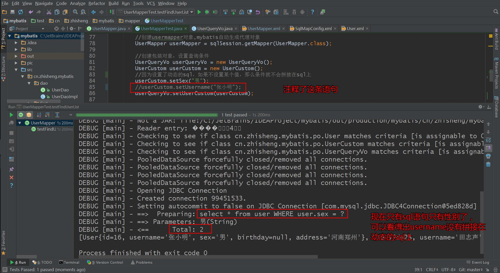
通过上面的其实看到在 where sql语句中有很多重复代码，我们可以将其抽取出来，组成一个sql片段，其他的statement就可以引用这个sql片段，利于系统的开发。
这里我们就拿上边sql 中的where定义一个sq片段如下：
xxxxxxxxxx151 <!--sql片段2 id:唯一标识3 经验：是基于单表来定义sql片段，这样的话sql片段的可重用性才高4 一般不包含where5 -->6 <sql id="query_user_where">7 <if test="userCustom != null">8 <if test="userCustom.sex != null and userCustom.sex != ''">9 and user.sex = #{userCustom.sex}10 </if>11 <if test="userCustom.username != null">12 and user.username like '%${userCustom.username}%'13 </if>14 </if>15 </sql>那么我们该怎样引用这个sql片段呢？如下：
xxxxxxxxxx51select * from user2 <where>3 <!--refid: 指定sql片段的id，如果是写在其他的mapper文件中，则需要在前面加上namespace-->4 <include refid="query_user_where"/>5 </where>测试的话还是那样了，就不继续说了，前面已经说了很多了。
向sql传递数组或List，mybatis使用foreach解析
需求：
在用户查询列表和查询总数的statement中增加多个id输入查询。
sql语句如下：
xxxxxxxxxx31SELECT * FROM USER WHERE id=1 OR id=10 ORid=162或者3SELECT * FROM USER WHERE id IN(1,10,16)在输入参数类型中添加 List
xxxxxxxxxx51public class UserQueryVo //用户包装类型2{3 //传入多个id4 private List<Integer> ids;5}修改 UserMapper.xml文件
WHERE id=1 OR id=10 OR id=16
在查询条件中，查询条件定义成一个sql片段，需要修改sql片段。
xxxxxxxxxx221<if test="ids!=null">2 <!-- 使用 foreach遍历传入ids3 collection：指定输入 对象中集合属性4 item：每个遍历生成对象中5 open：开始遍历时拼接的串6 close：结束遍历时拼接的串7 separator：遍历的两个对象中需要拼接的串8 -->9 <!-- 使用实现下边的sql拼接：10 AND (id=1 OR id=10 OR id=16)11 -->12 <foreach collection="ids" item="user_id" open="AND (" close=")" separator="or">13 <!-- 每个遍历需要拼接的串 -->14 id=#{user_id}15 </foreach>1617 <!-- 实现 “ and id IN(1,10,16)”拼接 -->18 <!-- <foreach collection="ids" item="user_id" open="and id IN(" close=")" separator=",">19 每个遍历需要拼接的串20 #{user_id}21 </foreach> -->22 </if>测试代码：
xxxxxxxxxx71 //传入多个id2List<Integer> ids = new ArrayList<>();3ids.add(1);4ids.add(10);5ids.add(16);6//将ids传入statement中7userQueryVo.setIds(ids);安排：对订单商品数据模型进行分析
1、高级映射：
2、查询缓存：
3、Mybatis 和 Spring 整合
4、逆向工程
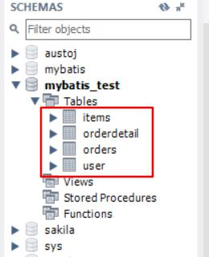
1、每张表记录的数据内容（分模块对每张表记录的内容进行熟悉，相当于学习系统需求的过程）
2、每张表重要的的字段设置（非空字段、外键字段）
3、数据库级别表与表之间的关系（外键关系）
4、表与表业务之间的关系（要建立在每个业务意义的基础上去分析）
表与表业务之间的关系：
在分析表与表之间的业务关系时需要建立在某个业务意义基础上去分析。
先分析数据级别之间有关系的表之间的业务关系：
1、usre和orders：
user ---> orders：一个用户可以创建多个订单，一对多
orders ---> user：一个订单只由一个用户创建，一对一
2、 orders和orderdetail：
orders ---> orderdetail：一个订单可以包括 多个订单明细，因为一个订单可以购买多个商品，每个商品的购买信息在orderdetail记录，一对多关系
orderdetail ---> orders：一个订单明细只能包括在一个订单中，一对一
3、 orderdetail 和 itesm：
orderdetail ---> itesms：一个订单明细只对应一个商品信息，一对一
items ---> orderdetail:一个商品可以包括在多个订单明细 ，一对多
再分析数据库级别没有关系的表之间是否有业务关系：
4、 orders 和 items：
orders 和 items 之间可以通过 orderdetail 表建立 关系。
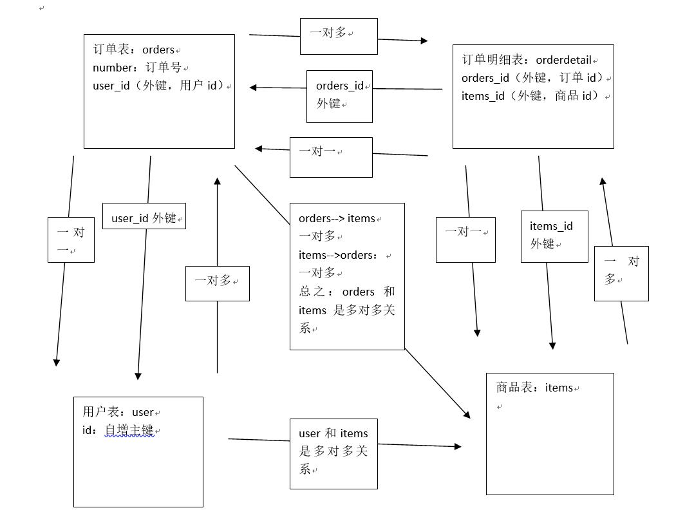
查询订单信息，关联查询创建订单的用户信息
sql 语句
确定查询的主表：订单表
确定查询的关联表：用户表
关联查询使用内链接？还是外链接？
由于orders表中有一个外键（user_id），通过外键关联查询用户表只能查询出一条记录，可以使用内链接。
xxxxxxxxxx11SELECT orders.*, USER.username, USER.sex, USER.address FROM orders, USER WHERE orders.user_id = user.id创建 pojo
Orders.java
xxxxxxxxxx121public class Orders {2 private Integer id;3 private Integer userId;4 private String number;5 private Date createtime;6 private String note;7 //用户信息8 private User user;9 //订单明细10 private List<Orderdetail> orderdetails;11 //getter and setter12}OrderCustom.java
xxxxxxxxxx111//通过此类映射订单和用户查询的结果，让此类继承包括 字段较多的pojo类2public class OrdersCustom extends Orders{3 //添加用户属性4 /*USER.username,5 USER.sex,6 USER.address */7 private String username;8 private String sex;9 private String address;10 //getter and setter11}映射文件
OrdersMapperCustom.xml
xxxxxxxxxx41<!--查询订单关联查询用户信息-->2 <select id="findOrdersUser" resultType="cn.zhisheng.mybatis.po.OrdersCustom">3 SELECT orders.*, USER.username, USER.sex, USER.address FROM orders, USER WHERE orders.user_id = user.id4 </select>Mapper 文件
OrdersMapperCustom.java
xxxxxxxxxx41public interface OrdersMapperCustom2{3 public OrdersCustom findOrdersUser() throws Exception;4}测试代码（记得在 SqlConfig.xml中添加载 OrdersMapperCustom.xml 文件）
xxxxxxxxxx111 2 public void testFindOrdersUser() throws Exception3 {4 SqlSession sqlSession = sqlSessionFactory.openSession();5 //创建OrdersMapperCustom对象,mybatis自动生成代理对象6 OrdersMapperCustom ordersMapperCustom = sqlSession.getMapper(OrdersMapperCustom.class);7 //调用OrdersMapperCustom的方法8 List<OrdersCustom> list = ordersMapperCustom.findOrdersUser();9 System.out.println(list);10 sqlSession.close();11 }测试结果
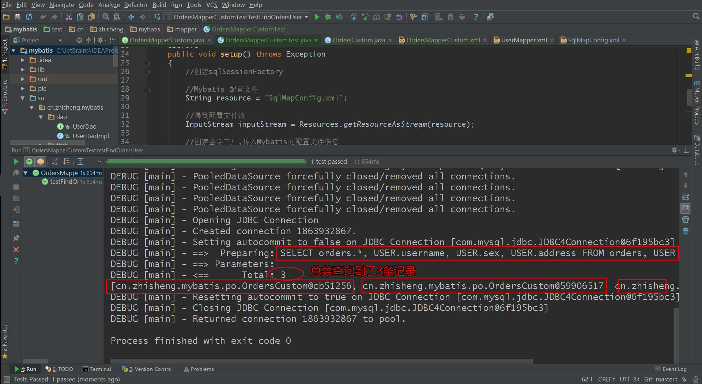
sql 语句（和上面的一致）
使用 resultMap 映射思路
使用 resultMap 将查询结果中的订单信息映射到 Orders 对象中，在 orders 类中添加 User 属性，将关联查询出来的用户信息映射到 orders 对象中的 user 属性中。
xxxxxxxxxx21 //用户信息2 private User user;映射文件
OrdersMapperCustom.xml
先定义 resultMap
xxxxxxxxxx321<!--定义查询订单关联查询用户信息的resultMap2 将整个查询结果映射到cn.zhisheng.mybatis.po.Orders3 -->4 <resultMap id="OrdersUserResultMap" type="cn.zhisheng.mybatis.po.Orders">5 <!--配置映射的订单信息-->6 <!--id表示查询结果中的唯一标识 在这里是订单的唯一标识 如果是由多列组成的唯一标识，那么就需要配置多个id7 column：id 是订单信息中的唯一标识列8 property：id 是订单信息唯一标识列所映射到orders中的id属性9 最终resultMap对column和property做一个映射关系（对应关系）10 -->11 <id column="id" property="id"/>12 <result column="user_id" property="userId"/>13 <result column="number" property="number"/>14 <result column="createtime" property="createtime"/>15 <result column="note" property="note"/>1617 <!--配置映射的关联用户信息18 association 用于映射关联查询单个对象的信息19 property 将要关联查询的用户信息映射到 orders中的属性中去20 -->21 <association property="user" javaType="cn.zhisheng.mybatis.po.User">22 <!--id 关联用户信息的唯一标识23 column: 指定唯一标识用户的信息24 property：映射到user的那个属性25 -->26 <id column="user_id" property="id"/>27 <result column="username" property="username"/>28 <result column="sex" property="sex"/>29 <result column="address" property="address"/>30 <result column="birthday" property="birthday"/>31 </association>32 </resultMap> xxxxxxxxxx41<!--查询订单关联查询用户信息, 使用 resultMap-->2 <select id="findOrdersUserResultMap" resultMap="OrdersUserResultMap">3 SELECT orders.*, USER.username, USER.sex, USER.address FROM orders, USER WHERE orders.user_id = user.id4 </select>Mapper 文件
xxxxxxxxxx11 public List<Orders> findOrdersUserResultMap() throws Exception;测试代码
xxxxxxxxxx111 2 public void testFindOrdersUserResultMap() throws Exception3 {4 SqlSession sqlSession = sqlSessionFactory.openSession();5 //创建OrdersMapperCustom对象,mybatis自动生成代理对象6 OrdersMapperCustom ordersMapperCustom = sqlSession.getMapper(OrdersMapperCustom.class);7 //调用OrdersMapperCustom的方法8 List<Orders> list = ordersMapperCustom.findOrdersUserResultMap();9 System.out.println(list);10 sqlSession.close();11 }测试结果
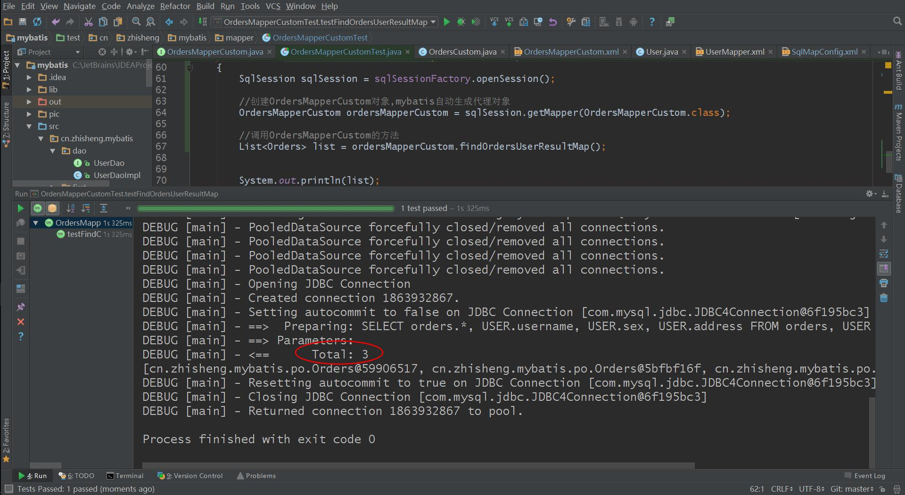
需求：查询订单及订单明细信息
SQL语句：
确定主查询表：订单表
确定关联查询表：订单明细表
在一对一查询基础上添加订单明细表关联即可。
xxxxxxxxxx21SELECT orders.*, USER.username, USER.sex, USER.address, orderdetail.id orderdetail_id, orderdetail.items_id, orderdetail.items_num, orderdetail.orders_id FROM orders, USER,2orderdetail WHERE orders.user_id = user.id AND orderdetail.orders_id=orders.id分析：
使用 resultType 将上边的查询结果映射到 pojo 中，订单信息的就是重复。
要求：
对 orders 映射不能出现重复记录。
在 orders.java 类中添加 List
最终会将订单信息映射到 orders 中，订单所对应的订单明细映射到 orders 中的 orderDetails 属性中。
映射成的 orders 记录数为两条（orders信息不重复）
每个 orders 中的 orderDetails 属性存储了该订单所对应的订单明细。
映射文件：
首先定义 resultMap
xxxxxxxxxx201<!--定义查询订单及订单明细信息的resultMap使用extends继承，不用在中配置订单信息和用户信息的映射-->2 <resultMap id="OrdersAndOrderDetailResultMap" type="cn.zhisheng.mybatis.po.Orders" extends="OrdersUserResultMap">3 <!-- 订单信息 -->4 <!-- 用户信息 -->5 <!-- 使用extends继承，不用在中配置订单信息和用户信息的映射 -->6 <!-- 订单明细信息7 一个订单关联查询出了多条明细，要使用collection进行映射8 collection：对关联查询到多条记录映射到集合对象中9 property：将关联查询到多条记录映射到cn.zhisheng.mybatis.po.Orders哪个属性10 ofType：指定映射到list集合属性中pojo的类型11 -->12 <collection property="orderdetails" ofType="cn.zhisheng.mybatis.po.Orderdetail">13 <!-- id：订单明细唯 一标识14 property:要将订单明细的唯 一标识 映射到cn.zhisheng.mybatis.po.Orderdetail的哪个属性-->15 <id column="orderdetail_id" property="id"/>16 <result column="items_id" property="itemsId"/>17 <result column="items_num" property="itemsNum"/>18 <result column="orders_id" property="ordersId"/>19 </collection>20 </resultMap> xxxxxxxxxx51 <!--查询订单及订单明细信息, 使用 resultMap-->2 <select id="findOrdersAndOrderDetailResultMap" resultMap="OrdersAndOrderDetailResultMap">3 SELECT orders.*, USER.username, USER.sex, USER.address, orderdetail.id orderdetail_id, orderdetail.items_id, orderdetail.items_num, orderdetail.orders_id4 FROM orders, USER,orderdetail WHERE orders.user_id = user.id AND orderdetail.orders_id=orders.id5 </select>Mapper 文件
xxxxxxxxxx11public List<Orders> findOrdersAndOrderDetailResultMap() throws Exception;测试文件
xxxxxxxxxx111 public void testFindOrdersAndOrderDetailResultMap() throws Exception3 {4 SqlSession sqlSession = sqlSessionFactory.openSession();5 //创建OrdersMapperCustom对象,mybatis自动生成代理对象6 OrdersMapperCustom ordersMapperCustom = sqlSession.getMapper(OrdersMapperCustom.class);7 //调用OrdersMapperCustom的方法8 List<Orders> list = ordersMapperCustom.findOrdersAndOrderDetailResultMap();9 System.out.println(list);10 sqlSession.close();11 }测试结果
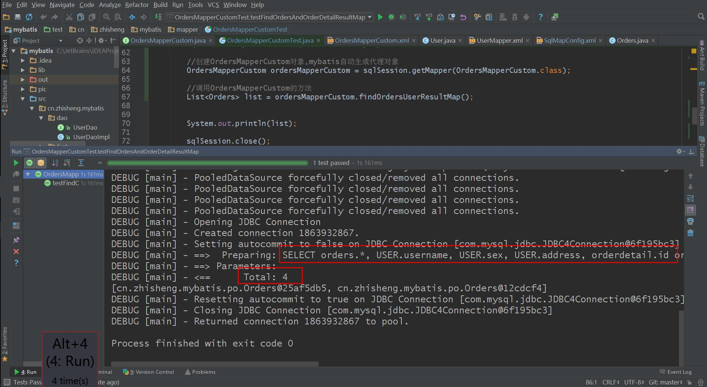
mybatis使用resultMap的collection对关联查询的多条记录映射到一个list集合属性中。
使用resultType实现：将订单明细映射到orders中的orderdetails中，需要自己处理，使用双重循环遍历，去掉重复记录，将订单明细放在orderdetails中。
需求：查询用户及用户购买商品信息。
SQL语句：
查询主表是：用户表
关联表：由于用户和商品没有直接关联，通过订单和订单明细进行关联，所以关联表：
orders、orderdetail、items
xxxxxxxxxx31SELECT orders.*, USER.username, USER.sex, USER.address, orderdetail.id orderdetail_id,2orderdetail.items_id, orderdetail.items_num, orderdetail.orders_id, items.name items_name,3items.detail items_detail, items.price items_price FROM orders, USER, orderdetail, items WHERE orders.user_id = user.id AND orderdetail.orders_id=orders.id AND orderdetail.items_id = items.id映射思路：
将用户信息映射到 user 中。
在 user 类中添加订单列表属性List
xxxxxxxxxx431<!--定义查询用户及用户购买商品信息的 resultMap-->2 <resultMap id="UserAndItemsResultMap" type="cn.zhisheng.mybatis.po.User">3 <!--用户信息-->4 <id column="user_id" property="id"/>5 <result column="username" property="username"/>6 <result column="sex" property="sex"/>7 <result column="birthday" property="birthday"/>8 <result column="address" property="address"/>910 <!--订单信息11 一个用户对应多个订单，使用collection映射12 -->13 <collection property="ordersList" ofType="cn.zhisheng.mybatis.po.Orders">14 <id column="id" property="id"/>15 <result column="user_id" property="userId"/>16 <result column="number" property="number"/>17 <result column="createtime" property="createtime"/>18 <result column="note" property="note"/>1920 <!-- 订单明细21 一个订单包括 多个明细22 -->23 <collection property="orderdetails" ofType="cn.zhisheng.mybatis.po.Orderdetail">2425 <id column="orderdetail_id" property="id"/>26 <result column="orders_id" property="ordersId"/>27 <result column="items_id" property="itemsId"/>28 <result column="items_num" property="itemsNum"/>2930 <!-- 商品信息31 一个订单明细对应一个商品32 -->33 <association property="items" javaType="cn.zhisheng.mybatis.po.Items">34 <id column="items_id" property="id"/>35 <result column="items_name" property="name"/>36 <result column="items_price" property="price"/>37 <result column="items_pic" property="pic"/>38 <result column="items_createtime" property="createtime"/>39 <result column="items_detail" property="detail"/>40 </association>41 </collection>42 </collection>43 </resultMap> xxxxxxxxxx51<!--查询用户及用户购买商品信息, 使用 resultMap-->2 <select id="findUserAndItemsResultMap" resultMap="UserAndItemsResultMap">3 SELECT orders.*, USER.username, USER.sex, USER.address, orderdetail.id orderdetail_id, orderdetail.items_id, orderdetail.items_num, orderdetail.orders_id4 FROM orders, USER,orderdetail WHERE orders.user_id = user.id AND orderdetail.orders_id=orders.id5 </select> xxxxxxxxxx11public List<User> findUserAndItemsResultMap() throws Exception; xxxxxxxxxx111 public void testFindUserAndItemsResultMap() throws Exception3 {4 SqlSession sqlSession = sqlSessionFactory.openSession();5 //创建OrdersMapperCustom对象,mybatis自动生成代理对象6 OrdersMapperCustom ordersMapperCustom = sqlSession.getMapper(OrdersMapperCustom.class);7 //调用OrdersMapperCustom的方法8 List<User> list = ordersMapperCustom.findUserAndItemsResultMap();9 System.out.println(list);10 sqlSession.close();11 }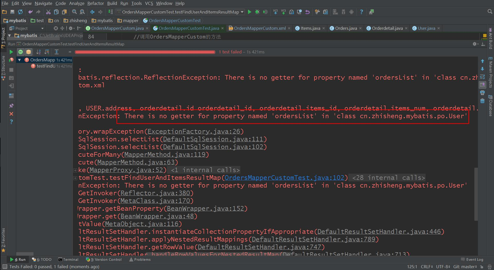
我去，竟然报错了，但是不要怕，通过查看报错信息可以知道我忘记在 User.java 中加入 orderlist 属性了，接下来我加上去，并加上 getter 和 setter 方法。
xxxxxxxxxx81//用户创建的订单列表2 private List<Orders> ordersList;3 public List<Orders> getOrdersList() {4 return ordersList;5 }6 public void setOrdersList(List<Orders> ordersList) {7 this.ordersList = ordersList;8 }再次测试就能成功了。
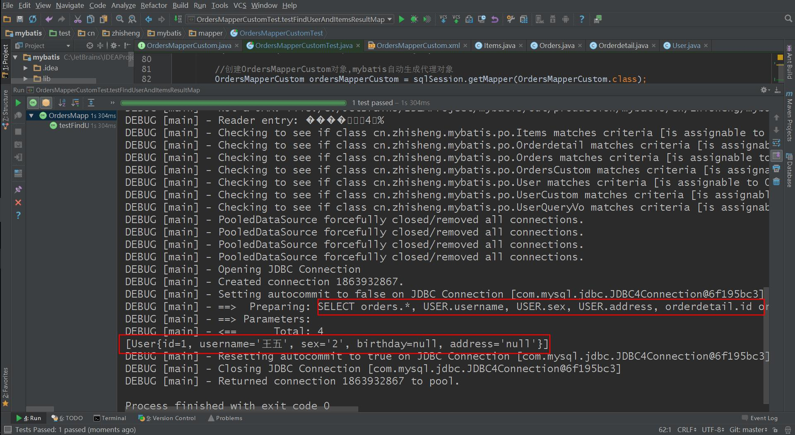
将查询用户购买的商品信息明细清单，（用户名、用户地址、购买商品名称、购买商品时间、购买商品数量）
针对上边的需求就使用resultType将查询到的记录映射到一个扩展的pojo中，很简单实现明细清单的功能。
一对多是多对多的特例，如下需求：
查询用户购买的商品信息，用户和商品的关系是多对多关系。
需求1：
查询字段：用户账号、用户名称、用户性别、商品名称、商品价格(最常见)
企业开发中常见明细列表，用户购买商品明细列表，
使用resultType将上边查询列映射到pojo输出。
需求2：
查询字段：用户账号、用户名称、购买商品数量、商品明细（鼠标移上显示明细）
使用resultMap将用户购买的商品明细列表映射到user对象中。
总结：
使用resultMap是针对那些对查询结果映射有特殊要求的功能，，比如特殊要求映射成list中包括多个list。
作用：
将查询结果按照sql列名pojo属性名一致性映射到pojo中。
场合：
常见一些明细记录的展示，比如用户购买商品明细，将关联查询信息全部展示在页面时，此时可直接使用resultType将每一条记录映射到pojo中，在前端页面遍历list（list中是pojo）即可。
使用association和collection完成一对一和一对多高级映射（对结果有特殊的映射要求）。
作用：
将关联查询信息映射到一个pojo对象中。
场合：
为了方便查询关联信息可以使用association将关联订单信息映射为用户对象的pojo属性中，比如：查询订单及关联用户信息。 使用resultType无法将查询结果映射到pojo对象的pojo属性中，根据对结果集查询遍历的需要选择使用resultType还是resultMap。
作用：
将关联查询信息映射到一个list集合中。
场合：
为了方便查询遍历关联信息可以使用collection将关联信息映射到list集合中，比如：查询用户权限范围模块及模块下的菜单，可使用collection将模块映射到模块list中，将菜单列表映射到模块对象的菜单list属性中，这样的作的目的也是方便对查询结果集进行遍历查询。如果使用resultType无法将查询结果映射到list集合中。
resultMap可以实现高级映射（使用association、collection实现一对一及一对多映射），association、collection具备延迟加载功能。 需求： 如果查询订单并且关联查询用户信息。如果先查询订单信息即可满足要求，当我们需要查询用户信息时再查询用户信息。把对用户信息的按需去查询就是延迟加载。
延迟加载：先从单表查询、需要时再从关联表去关联查询，大大提高 数据库性能，因为查询单表要比关联查询多张表速度要快。
在mybatis核心配置文件中配置：
lazyLoadingEnabled、aggressiveLazyLoading
| 设置项 | 描述 | 允许值 | 默认值 |
|---|---|---|---|
| lazyLoadingEnabled | 全局性设置懒加载。如果设为‘false’，则所有相关联的都会被初始化加载。 | true | false | false |
| aggressiveLazyLoading | 当设置为‘true’的时候，懒加载的对象可能被任何懒属性全部加载。否则，每个属性都按需加载。 | true | false | true |
xxxxxxxxxx41<settings>2 <setting name="lazyLoadingEnabled" value="true"/>3 <setting name="aggressiveLazyLoading" value="false"/>4</settings>需求：查询订单并且关联查询用户信息
需要定义两个 mapper 的方法对应的 statement。
1、只查询订单信息
SQL 语句： select * from orders
在查询订单的 statement 中使用 association 去延迟加载（执行）下边的 statement (关联查询用户信息)
xxxxxxxxxx41<!--查询订单并且关联查询用户信息，关联用户信息需要通过 association 延迟加载-->2 <select id="findOrdersUserLazyLoading" resultMap="OrdersUserLazyLoadingResultMap">3 select * from orders4 </select>2、关联查询用户信息
通过上面查询订单信息中的 user_id 来关联查询用户信息。使用 UserMapper.xml 中的 findUserById
SQL语句：select * from user where id = user_id
xxxxxxxxxx31<select id="findUserById" parameterType="int" resultType="user">2 select * from user where id = #{value}3 </select>上边先去执行 findOrdersUserLazyLoading，当需要去查询用户的时候再去执行 findUserById ，通过 resultMap的定义将延迟加载执行配置起来。也就是通过 resultMap 去加载 UserMapper.xml 文件中的 select = findUserById
xxxxxxxxxx201<!--定义 关联用户信息（通过 association 延迟加载）的resultMap-->2 <resultMap id="OrdersUserLazyLoadingResultMap" type="cn.zhisheng.mybatis.po.Orders">3 <!--对订单信息映射-->4 <id column="id" property="id"/>5 <result column="user_id" property="userId"/>6 <result column="number" property="number"/>7 <result column="createtime" property="createtime"/>8 <result column="note" property="note"/>9 <!-- 实现对用户信息进行延迟加载10 select：指定延迟加载需要执行的statement的id（是根据user_id查询用户信息的statement）11 要使用userMapper.xml中findUserById完成根据用户id(user_id)用户信息的查询，如果findUserById不在本mapper中需要前边加namespace12 column：订单信息中关联用户信息查询的列，是user_id13 关联查询的sql理解为：14 SELECT orders.*,15 (SELECT username FROM USER WHERE orders.user_id = user.id)username,16 (SELECT sex FROM USER WHERE orders.user_id = user.id)sex17 FROM orders-->18 <association property="user" javaType="cn.zhisheng.mybatis.po.User" select="cn.zhisheng.mybatis.mapper.UserMapper.findUserById" column="user_id">19 </association>20 </resultMap> xxxxxxxxxx11public List<Orders> findOrdersUserLazyLoading() throws Exception; xxxxxxxxxx171 public void testFindOrdersUserLazyLoading() throws Exception3 {4 SqlSession sqlSession = sqlSessionFactory.openSession();5 //创建OrdersMapperCustom对象,mybatis自动生成代理对象6 OrdersMapperCustom ordersMapperCustom = sqlSession.getMapper(OrdersMapperCustom.class);7 //查询订单信息8 List<Orders> list = ordersMapperCustom.findOrdersUserLazyLoading();9 //遍历所查询的的订单信息10 for (Orders orders : list)11 {12 //查询用户信息13 User user = orders.getUser();14 System.out.println(user);15 }16 sqlSession.close();17 }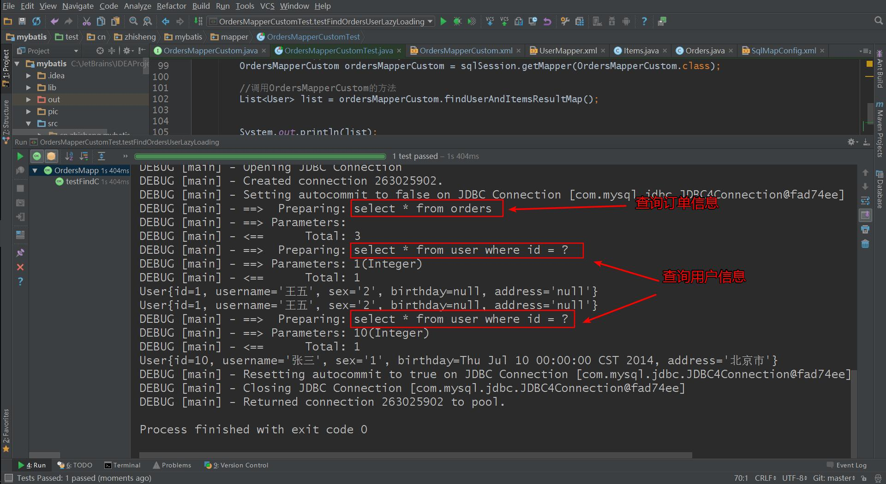
整个延迟加载的思路：
1、执行上边mapper方法（findOrdersUserLazyLoading），内部去调用cn.zhisheng.mybatis.mapper.OrdersMapperCustom 中的 findOrdersUserLazyLoading 只查询 orders 信息（单表）。
2、在程序中去遍历上一步骤查询出的 List
3、延迟加载，去调用 UserMapper.xml 中 findUserbyId 这个方法获取用户信息。
不使用 mybatis 提供的 association 及 collection 中的延迟加载功能，如何实现延迟加载？？
实现方法如下：
定义两个mapper方法：
1、查询订单列表
2、根据用户id查询用户信息
实现思路：
先去查询第一个mapper方法，获取订单信息列表
在程序中（service），按需去调用第二个mapper方法去查询用户信息。
总之：
使用延迟加载方法，先去查询 简单的 sql（最好单表，也可以关联查询），再去按需要加载关联查询的其它信息。
上面的那个案例是一对一延迟加载，那么如果我们想一对多进行延迟加载呢，其实也是很简单的。
一对多延迟加载的方法同一对一延迟加载，在collection标签中配置select内容。
作用：
当需要查询关联信息时再去数据库查询，默认不去关联查询，提高数据库性能。 只有使用resultMap支持延迟加载设置。
场合：
当只有部分记录需要关联查询其它信息时，此时可按需延迟加载，需要关联查询时再向数据库发出sql，以提高数据库性能。
当全部需要关联查询信息时，此时不用延迟加载，直接将关联查询信息全部返回即可，可使用resultType或resultMap完成映射。
mybatis提供查询缓存，用于减轻数据压力，提高数据库性能。
mybaits提供一级缓存，和二级缓存。
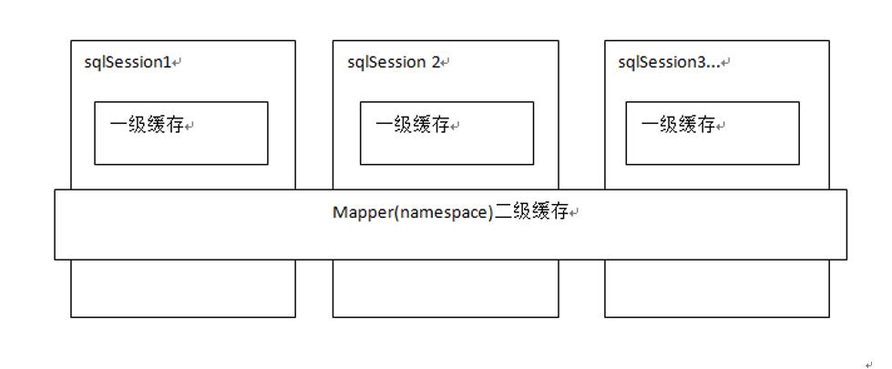
为什么要用缓存？
如果缓存中有数据就不用从数据库中获取，大大提高系统性能。
工作原理：
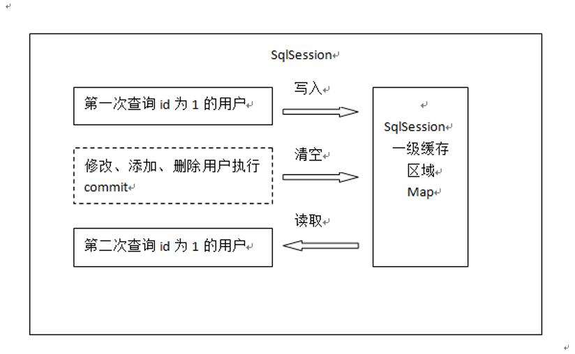
第一次发起查询用户id为1的用户信息，先去找缓存中是否有id为1的用户信息，如果没有，从数据库查询用户信息。
得到用户信息，将用户信息存储到一级缓存中。
如果sqlSession去执行commit操作（执行插入、更新、删除），清空SqlSession中的一级缓存，这样做的目的为了让缓存中存储的是最新的信息，避免脏读。
第二次发起查询用户id为1的用户信息，先去找缓存中是否有id为1的用户信息，缓存中有，直接从缓存中获取用户信息。
一级缓存测试
Mybatis 默认支持一级缓存，不需要在配置文件中配置。
所以我们直接按照上面的步骤进行测试：
xxxxxxxxxx151//一级缓存测试2 3 public void testCache1() throws Exception {4 SqlSession sqlSession = sqlSessionFactory.openSession();5 //创建UserMapper对象,mybatis自动生成代理对象6 UserMapper userMapper = sqlSession.getMapper(UserMapper.class);7 //查询使用的是同一个session8 //第一次发起请求，查询Id 为1的用户信息9 User user1 = userMapper.findUserById(1);10 System.out.println(user1);11 //第二次发起请求，查询Id 为1的用户信息12 User user2 = userMapper.findUserById(1);13 System.out.println(user2);14 sqlSession.close();15 }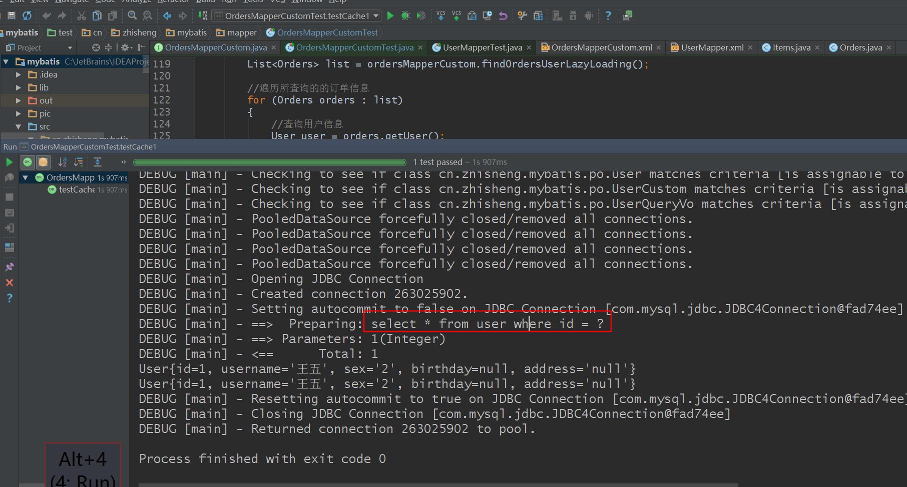
通过结果可以看出第二次没有发出sql查询请求，
所以我们需要在中间执行 commit 操作
xxxxxxxxxx91//如果sqlSession去执行commit操作（执行插入、更新、删除），2// 清空SqlSession中的一级缓存，这样做的目的为了让缓存中存储的是最新的信息，避免脏读。3//更新user1的信息，4user1.setUsername("李飞");5//user1.setSex("男");6//user1.setAddress("北京");7userMapper.updateUserById(user1);8//提交事务,才会去清空缓存9sqlSession.commit();测试
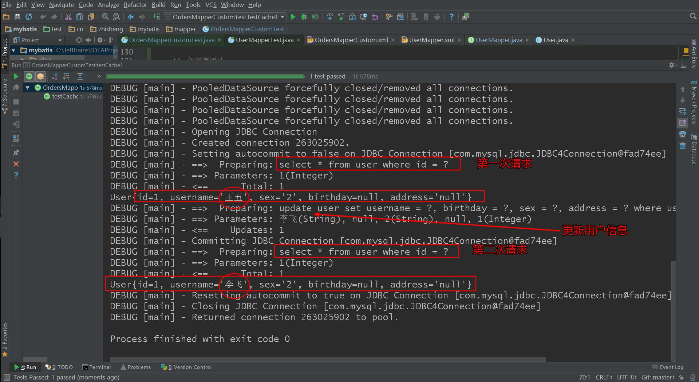
一级缓存应用
正式开发，是将 mybatis 和 spring 进行整合开发，事务控制在 service 中。
一个 service 方法中包括很多 mapper 方法调用。
service{
//开始执行时，开启事务，创建SqlSession对象
//第一次调用mapper的方法findUserById(1)
//第二次调用mapper的方法findUserById(1)，从一级缓存中取数据
//方法结束，sqlSession关闭
}
如果是执行两次service调用查询相同的用户信息，不走一级缓存，因为session方法结束，sqlSession就关闭，一级缓存就清空。
原理
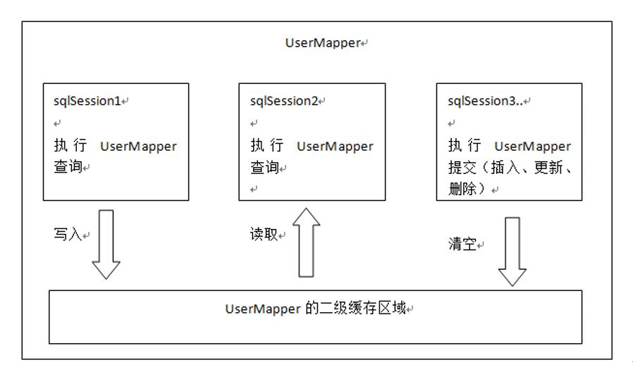
首先开启mybatis的二级缓存。
sqlSession1去查询用户id为1的用户信息，查询到用户信息会将查询数据存储到二级缓存中。
如果SqlSession3去执行相同 mapper下sql，执行commit提交，清空该 mapper下的二级缓存区域的数据。
sqlSession2去查询用户id为1的用户信息，去缓存中找是否存在数据，如果存在直接从缓存中取出数据。
二级缓存与一级缓存区别，二级缓存的范围更大，多个sqlSession可以共享一个UserMapper的二级缓存区域。
UserMapper有一个二级缓存区域（按namespace分） ，其它mapper也有自己的二级缓存区域（按namespace分）。
每一个namespace的mapper都有一个二缓存区域，两个mapper的namespace如果相同，这两个mapper执行sql查询到数据将存在相同的二级缓存区域中。
开启二级缓存：
mybaits的二级缓存是mapper范围级别，除了在SqlMapConfig.xml设置二级缓存的总开关，还要在具体的mapper.xml中开启二级缓存
在 SqlMapConfig.xml 开启二级开关
xxxxxxxxxx21<!-- 开启二级缓存 -->2<setting name="cacheEnabled" value="true"/>然后在你的 Mapper 映射文件中添加一行：
调用 pojo 类实现序列化接口：
二级缓存需要查询结果映射的pojo对象实现java.io.Serializable接口实现序列化和反序列化操作（因为二级缓存数据存储介质多种多样，在内存不一样），注意如果存在父类、成员pojo都需要实现序列化接口。
xxxxxxxxxx21public class Orders implements Serializable2public class User implements Serializable测试
xxxxxxxxxx341//二级缓存测试2 3 public void testCache2() throws Exception4 {5 SqlSession sqlSession1 = sqlSessionFactory.openSession();6 SqlSession sqlSession2 = sqlSessionFactory.openSession();7 SqlSession sqlSession3 = sqlSessionFactory.openSession();8910 //创建UserMapper对象,mybatis自动生成代理对象11 UserMapper userMapper1 = sqlSession1.getMapper(UserMapper.class);12 //sqlSession1 执行查询 写入缓存(第一次查询请求)13 User user1 = userMapper1.findUserById(1);14 System.out.println(user1);15 sqlSession1.close();161718 //sqlSession3 执行提交 清空缓存19 UserMapper userMapper3 = sqlSession3.getMapper(UserMapper.class);20 User user3 = userMapper3.findUserById(1);21 user3.setSex("女");22 user3.setAddress("山东济南");23 user3.setUsername("崔建");24 userMapper3.updateUserById(user3);25 //提交事务，清空缓存26 sqlSession3.commit();27 sqlSession3.close();2829 //sqlSession2 执行查询(第二次查询请求)30 UserMapper userMapper2 = sqlSession2.getMapper(UserMapper.class);31 User user2 = userMapper2.findUserById(1);32 System.out.println(user2);33 sqlSession2.close();34 }结果：
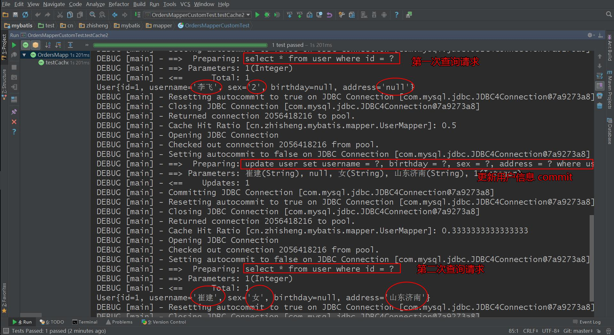
useCache 配置
在 statement 中设置 useCache=false 可以禁用当前 select 语句的二级缓存，即每次查询都会发出sql去查询，默认情况是true，即该sql使用二级缓存。
xxxxxxxxxx11<select id="findUserById" parameterType="int" resultType="user" useCache="false">总结：针对每次查询都需要最新的数据sql，要设置成useCache=false，禁用二级缓存。
刷新缓存（清空缓存）
在mapper的同一个namespace中，如果有其它insert、update、delete操作数据后需要刷新缓存，如果不执行刷新缓存会出现脏读。
设置statement配置中的flushCache="true" 属性，默认情况下为true即刷新缓存，如果改成false则不会刷新。使用缓存时如果手动修改数据库表中的查询数据会出现脏读。
如下：
xxxxxxxxxx11<insert id="insetrUser" parameterType="cn.zhisheng.mybatis.po.User" flushCache="true">一般下执行完commit操作都需要刷新缓存，flushCache=true表示刷新缓存，这样可以避免数据库脏读。
flushInterval（刷新间隔）可以被设置为任意的正整数，而且它们代表一个合理的毫秒形式的时间段。默认情况是不设置，也就是没有刷新间隔，缓存仅仅调用语句时刷新。
size（引用数目）可以被设置为任意正整数，要记住你缓存的对象数目和你运行环境的可用内存资源数目。默认值是1024。
readOnly（只读）属性可以被设置为true或false。只读的缓存会给所有调用者返回缓存对象的相同实例。因此这些对象不能被修改。这提供了很重要的性能优势。可读写的缓存会返回缓存对象的拷贝（通过序列化）。这会慢一些，但是安全，因此默认是false。
如下例子：
xxxxxxxxxx11<cache eviction="FIFO" flushInterval="60000" size="512" readOnly="true"/>这个更高级的配置创建了一个 FIFO 缓存,并每隔 60 秒刷新,存数结果对象或列表的 512 个引用,而且返回的对象被认为是只读的,因此在不同线程中的调用者之间修改它们会导致冲突。可用的收回策略有, 默认的是 LRU:
ehcache 是一个分布式缓存框架。
分布缓存
我们系统为了提高系统并发，性能、一般对系统进行分布式部署（集群部署方式）
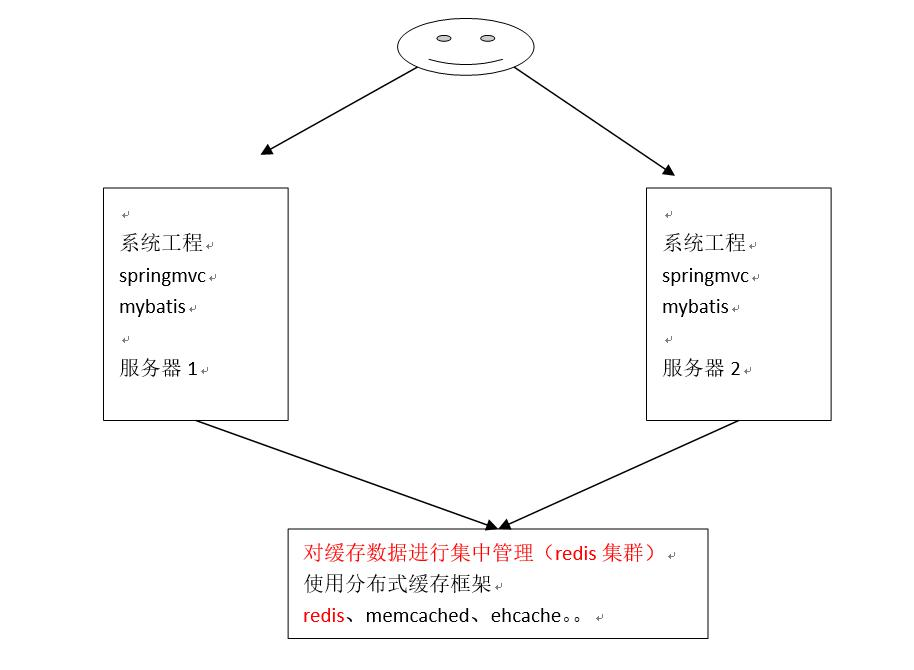
不使用分布缓存，缓存的数据在各各服务单独存储，不方便系统 开发。所以要使用分布式缓存对缓存数据进行集中管理。
mybatis无法实现分布式缓存，需要和其它分布式缓存框架进行整合。
整合方法
mybatis 提供了一个二级缓存 cache 接口（org.apache.ibatis.cache 下的 Cache），如果要实现自己的缓存逻辑，实现cache接口开发即可。
xxxxxxxxxx101import java.util.concurrent.locks.ReadWriteLock;2public interface Cache {3 String getId();4 void putObject(Object var1, Object var2);5 Object getObject(Object var1);6 Object removeObject(Object var1);7 void clear();8 int getSize();9 ReadWriteLock getReadWriteLock();10}mybatis和ehcache整合，mybatis 和 ehcache 整合包中提供了一个 cache 接口的实现类(org.apache.ibatis.cache.impl 下的 PerpetualCache)。
xxxxxxxxxx531package org.apache.ibatis.cache.impl;2import java.util.HashMap;3import java.util.Map;4import java.util.concurrent.locks.ReadWriteLock;5import org.apache.ibatis.cache.Cache;6import org.apache.ibatis.cache.CacheException;7public class PerpetualCache implements Cache {8 private String id;9 private Map<Object, Object> cache = new HashMap();10 public PerpetualCache(String id) {11 this.id = id;12 }13 public String getId() {14 return this.id;15 }16 public int getSize() {17 return this.cache.size();18 }19 public void putObject(Object key, Object value) {20 this.cache.put(key, value);21 }22 public Object getObject(Object key) {23 return this.cache.get(key);24 }25 public Object removeObject(Object key) {26 return this.cache.remove(key);27 }28 public void clear() {29 this.cache.clear();30 }31 public ReadWriteLock getReadWriteLock() {32 return null;33 }34 public boolean equals(Object o) {35 if(this.getId() == null) {36 throw new CacheException("Cache instances require an ID.");37 } else if(this == o) {38 return true;39 } else if(!(o instanceof Cache)) {40 return false;41 } else {42 Cache otherCache = (Cache)o;43 return this.getId().equals(otherCache.getId());44 }45 }46 public int hashCode() {47 if(this.getId() == null) {48 throw new CacheException("Cache instances require an ID.");49 } else {50 return this.getId().hashCode();51 }52 }53}通过实现 Cache 接口可以实现 mybatis 缓存数据通过其它缓存数据库整合，mybatis 的特长是sql操作，缓存数据的管理不是 mybatis 的特长，为了提高缓存的性能将 mybatis 和第三方的缓存数据库整合，比如 ehcache、memcache、redis等。
引入依赖包
ehcache-core-2.6.5.jar 和 mybatis-ehcache-1.0.2.jar
引入缓存配置文件
classpath下添加：ehcache.xml
内容如下：
xxxxxxxxxx141<ehcache xmlns:xsi="http://www.w3.org/2001/XMLSchema-instance"2 xsi:noNamespaceSchemaLocation="http://ehcache.org/ehcache.xsd">3 <diskStore path="C:\JetBrains\IDEAProject\ehcache" />4 <defaultCache5 maxElementsInMemory="1000"6 maxElementsOnDisk="10000000"7 eternal="false"8 overflowToDisk="false"9 timeToIdleSeconds="120"10 timeToLiveSeconds="120"11 diskExpiryThreadIntervalSeconds="120"12 memoryStoreEvictionPolicy="LRU">13 </defaultCache>14</ehcache>属性说明：
以下属性是必须的：
以下属性是可选的：
diskSpoolBufferSizeMB 这个参数设置DiskStore(磁盘缓存)的缓存区大小.默认是30MB.每个Cache都应该有自己的一个缓冲区.
开启ehcache缓存
EhcacheCache 是ehcache对Cache接口的实现；修改mapper.xml文件，在cache中指定EhcacheCache。
根据需求调整缓存参数：
xxxxxxxxxx91<cache type="org.mybatis.caches.ehcache.EhcacheCache" >2 <property name="timeToIdleSeconds" value="3600"/>3 <property name="timeToLiveSeconds" value="3600"/>4 <!-- 同ehcache参数maxElementsInMemory -->5 <property name="maxEntriesLocalHeap" value="1000"/>6 <!-- 同ehcache参数maxElementsOnDisk -->7 <property name="maxEntriesLocalDisk" value="10000000"/>8 <property name="memoryStoreEvictionPolicy" value="LRU"/>9 </cache>测试 ：(这命中率就代表成功将ehcache 与 mybatis 整合了)
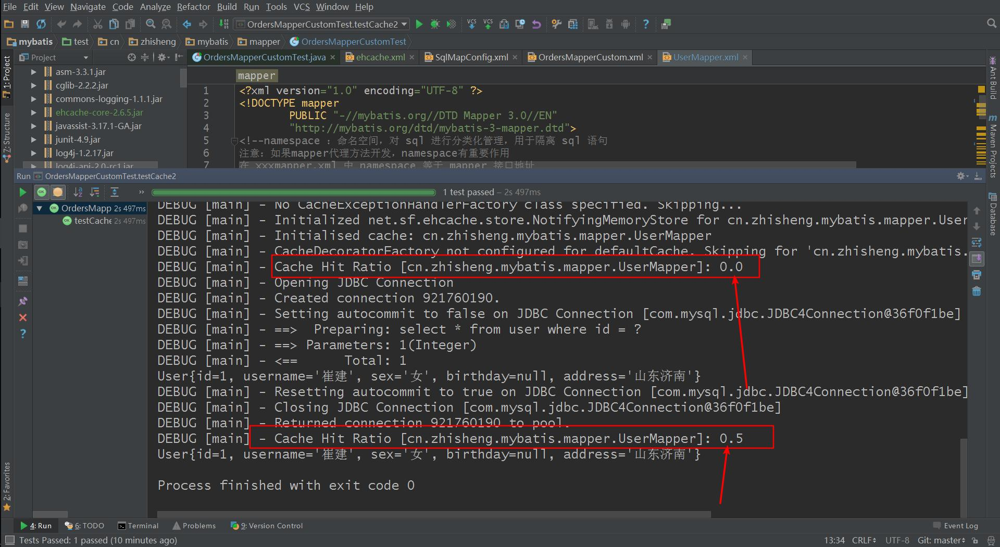
对于访问多的查询请求且用户对查询结果实时性要求不高，此时可采用 mybatis 二级缓存技术降低数据库访问量，提高访问速度，业务场景比如：耗时较高的统计分析sql、电话账单查询sql等。
实现方法如下：通过设置刷新间隔时间，由 mybatis 每隔一段时间自动清空缓存，根据数据变化频率设置缓存刷新间隔 flushInterval，比如设置为30分钟、60分钟、24小时等，根据需求而定。
mybatis 二级缓存对细粒度的数据级别的缓存实现不好，比如如下需求：对商品信息进行缓存，由于商品信息查询访问量大，但是要求用户每次都能查询最新的商品信息，此时如果使用 mybatis 的二级缓存就无法实现当一个商品变化时只刷新该商品的缓存信息而不刷新其它商品的信息，因为 mybaits 的二级缓存区域以 mapper 为单位划分，当一个商品信息变化会将所有商品信息的缓存数据全部清空。解决此类问题需要在业务层根据需求对数据有针对性缓存。